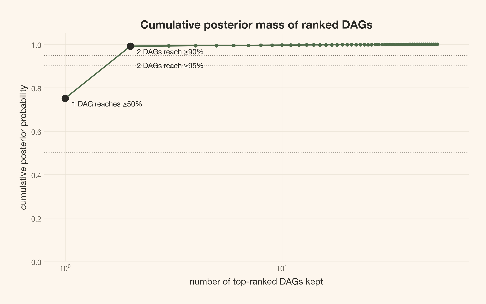
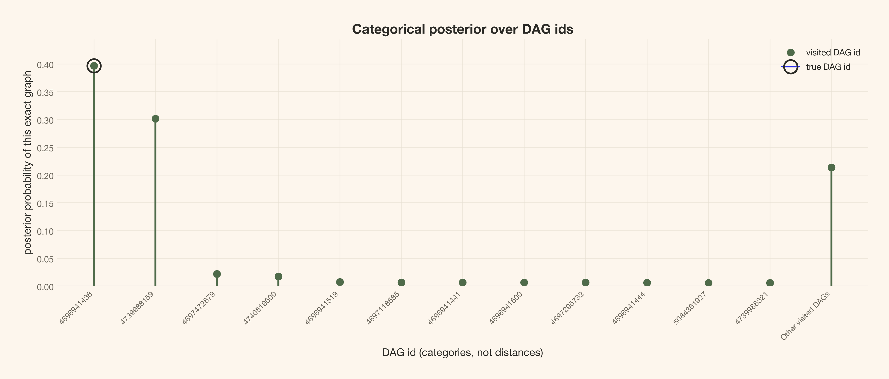
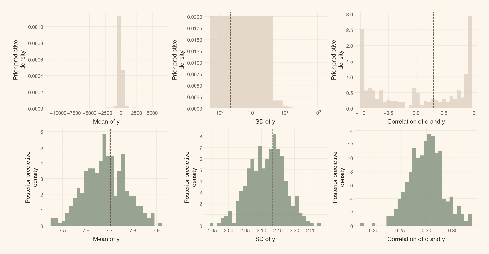
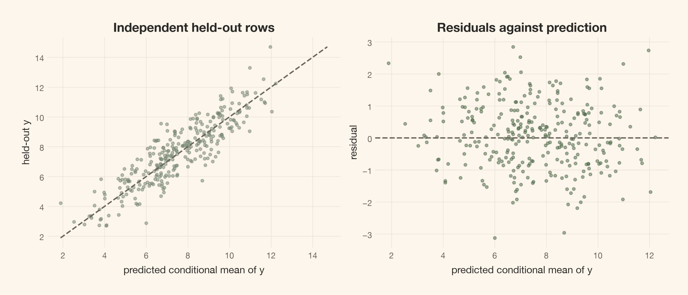

What if our Bayesian model is wrong? A posterior over DAGs under a finite nonlinear basis, model-averaged interventions with structural zeros, and the limits of what observational fit can decide.
Author
Carlos Trujillo
Published
August 30, 2026
Introduction
As a Bayesian, I often stop to ask what uncertainty I’m actually reporting. A posterior can look careful and precise. But what have I allowed myself to be uncertain about?
I find the distinction between epistemic and aleatoric uncertainty useful here. The first is about what we do not know. The second is about randomness in the process we are modeling. A parameter posterior describes the first; predictions for a new outcome can combine both. Even if we knew every parameter, the next outcome could still vary.
Inside epistemic uncertainty, though, there is another question: what if I chose the wrong model?
Suppose I fit a model in which b causes y. I can get a posterior for that effect. But unless I put alternative causal structures into the analysis, that posterior does not ask whether y causes b instead. Or whether some other variable explains their association.
Everything is conditional on the assumptions I wrote down. A wrong model can still give me a narrow posterior. What it does not give me automatically is uncertainty about the mistakes it cannot represent.
Figure 1: Uncertainty about an outcome is not the same as uncertainty about parameters or a graph. All of these calculations still sit inside a chosen family of models.
So could we make the model itself uncertain? Could we build a model of models?
That is the part I want to explore here. We will use Bayesian causal discovery to put probabilities on candidate graphs with linear upstream mechanisms and a nonlinear outcome, see why several graphs sometimes deserve one shared summary, and carry those possibilities into a causal effect. The point is not to add another posterior and declare victory. A model of models is still a model — I want us to leave knowing exactly which assumptions moved to where.
Quick summary
This article walks you through:
A model of models: what we must specify before a graph can receive a probability.
A proper nonlinear score: fixed basis features, an explicit intercept, and conjugate evidence for each candidate mechanism — with the approximation error stated.
DAGs, skeletons, and CPDAGs: what each summary groups, and one exact observational twin that no observation can separate.
A smaller search: directional priors, hard knowledge, exact terminal parents, and MCMC for what remains.
Graph diagnostics before interpretation: evidence for exploration, not a certificate of convergence.
A nonlinear intervention: how uncertainty about arrows becomes uncertainty about a finite effect, including an exact structural zero.
Sensitivity and transfer: repeated datasets and prespecified variants, then what must be re-declared before this recipe travels to another domain.
Most code blocks are folded; the model definition and the configuration cells stay visible. The mathematical and sampling details sit in expandable notes, so we can follow the main story without reading the graph-search machinery first.
Theoretical lens
How could we build a model of models?
We do not need a new version of Bayes’ rule. We need to let the model index be unknown, alongside its parameters.
Call the candidate model M and its parameters \theta_M. Then our joint posterior is
We have three things to write down: how a candidate generates data, what its parameters could be, and how much prior probability it receives. The data update the relative weights. Instead of choosing one model and forgetting the others, we can keep that distribution.
This is one joint Bayesian model, not a separate PyMC fit for every candidate. A sampled graph is a possible value of the structural unknown, just as a sampled coefficient is a possible value of a regression parameter. Different-prior runs later in the article change those assumptions for a sensitivity analysis.
There is a catch, of course. We have to choose the candidates. If every candidate leaves out the same important cause, the posterior has nowhere to put that possibility. “A model of models” is still a model.
A graph says which inputs, not what shape
Causal graphs give us a compact way to describe one part of a model: which variables enter which mechanisms. An arrow x\rightarrow y says that x is a direct input to the mechanism for y. It does not tell us the shape or size of that effect.
Figure 2: The graph specifies an input to a mechanism; the equation specifies how that input acts. A straight line and a curved relationship can share the same DAG.
A directed acyclic graph, or DAG, has arrows and no directed cycle: following arrows cannot bring us back to where we started. That lets us build a system one mechanism at a time. For now, we will not model feedback loops or hidden common causes.
A graph alone is not a complete statistical model. We must also choose the mechanisms and their noise. In this article every mechanism is additive and smooth:
where g_{ij} is linear for upstream nodes and comes from a small fixed feature dictionary when i=y. The parents \mathrm{Pa}_i(G) are the nodes with arrows into i. Choosing a DAG chooses which inputs appear; the intercepts, coefficients, and noise scales remain unknown.
So we are not searching through every model anyone could write. We are comparing additive Gaussian-noise causal models with a nonlinear outcome on a fixed set of measured variables. We assume independent, complete observations and no hidden common causes. We also use the causal Markov and faithfulness assumptions to connect graph structure with conditional independence: the graph implies some independences, and faithfulness rules out extra ones caused by exact cancellations.
Yes, we still have to assume something. The benefit is that we can now say clearly what is uncertain and what we have held fixed.
Getting started
We will use seven variables. There are 1,138,779,265 labeled DAGs on seven nodes, so we do not enumerate them and normalize every graph’s weight. Instead, PyMC samples one unknown DAG shared by the whole dataset; each candidate mechanism’s parameters are integrated out exactly under a conjugate prior.
Imports
import timefrom collections import Counterfrom importlib.metadata import versionfrom math import comb, prodimport arviz_base as azbimport arviz_stats as azsimport matplotlib.pyplot as pltimport networkx as nximport numpy as npimport pandas as pdimport pymc as pmimport pymc.dims as pmdimport pytensorimport pytensor.tensor as ptimport pytensor.xtensor as ptxfrom IPython.display import Markdown, displayfrom matplotlib.patches import FancyArrowPatchfrom pymc_marketing.mmm import MichaelisMentenSaturationfrom scipy.integrate import quadfrom cetagostini.style import COLORS, PALETTE, article_table, setup_notebookfrom graph_checks import check_basis_score, check_small_graphsfrom graph_figures import ( plot_cumulative, plot_decoder, plot_directions, plot_edge_counts, plot_graph_map, plot_graph_prior, plot_id_numberline, plot_id_pmf, plot_pair_states, plot_parent_counts, plot_process, plot_ranked_graphs,)from graph_math import ( BasisScore, cpdag, has_path, mec_key, pair_probabilities, pairs_for, parents_to_states, states_to_parents,)from graph_sampling import ( TemperedGraphStep, initial_states, terminal_parent_distributions,)setup_notebook(figsize=(8, 5), warnings_filter="")# The local sans-serif fallback supplies bold, but not semibold.plt.rcParams["axes.titleweight"] ="bold"# Retain the site face, with a glyph fallback for arrows and math symbols.plt.rcParams["font.family"] = ["sans-serif", "DejaVu Sans"]
Every constant in the experiment is frozen before any fit: seeds, sample sizes, dictionary, prior, and sampler settings all live in one cell.
There are four independent root causes: a,b,c,d. Both a and b affect e; d affects f. These upstream relationships are linear. Only the five direct effects into y saturate:
The seven errors are mutually independent \mathcal N(0,1), drawn row-wise so that a smaller dataset is a prefix of a larger one. These are structural equations: an intervention replaces one equation and leaves the other mechanisms unchanged.
For h, we use PyMC-Marketing’s MichaelisMentenSaturation, with saturation level 6 and half-saturation exposure 1. Michaelis–Menten takes nonnegative exposure, not a signed Gaussian input. We therefore declare a softplus exposure link u(x) before applying it. Our observed parents remain Gaussian indices; u(x) is the positive input to the response. This is a modeling assumption, not literal spend or holiday-count data. The resulting h is smooth, increasing, and bounded between 0 and 6.
Generate the frozen world
input_index = pt.vector("input_index")input_exposure = ptx.as_xtensor(pt.softplus(input_index), dims=("observation",))saturation = MichaelisMentenSaturation()saturation_response = pytensor.function( [input_index], saturation.function(input_exposure, alpha=SATURATION_ALPHA, lam=SATURATION_LAM).values,)def h(x):"""Michaelis–Menten response on softplus exposure, compiled once.""" values = np.asarray(x, dtype=float)return saturation_response(values.reshape(-1)).reshape(values.shape)def make_world(seed, size):"""Draw all seven errors row-wise; size 300 is a prefix of size 1000.""" errors = np.random.default_rng(seed).normal(size=(size, n_nodes)) a, b, c, d = errors[:, 0], errors[:, 1], errors[:, 2], errors[:, 3] e =0.9* a +0.8* b + errors[:, 4] f =0.9* d + errors[:, 5] y =0.55* h(a) +0.5* h(b) +0.6* h(c) +0.7* h(e) +0.8* h(f) + errors[:, 6]return np.column_stack([a, b, c, d, e, f, y])data = make_world(DATA_SEED, n_obs)truth = np.array([0, 0, 0, 0, 3, 8, 55], dtype=np.int64)truth_states = parents_to_states(truth, pairs)truth_key = mec_key(truth)print(f"{n_obs} observations from data seed {DATA_SEED}; "f"{sum(int(mask).bit_count() for mask in truth)} generating arrows")print("The generating graph is used for evaluation only; the fit never receives it.")
1000 observations from data seed 20260909; 8 generating arrows
The generating graph is used for evaluation only; the fit never receives it.
The true response h is not in the finite dictionary below. The dictionary approximates it, so the “exact” integrated evidence is exact for the approximating family, not for the Michaelis–Menten data-generating mechanism.
The world is small enough to draw and large enough to be interesting: eight arrows, five of them into y. Figure 3 shows the generating DAG, the shared response h, and the observed data.
Figure 3: Linear upstream relationships and five saturating effects into y. The middle panel shows PyMC-Marketing’s Michaelis–Menten response after the declared softplus exposure link. The scatter shows y against f with the other parent contributions and noise still present; it is not an isolated causal response curve.
The integral averages the likelihood over the parameter prior, not over fitted posterior draws. We do not fit each graph, take its best likelihood, and call that a posterior probability.
One proper score for every candidate mechanism
Each node’s mechanism is additive in its parents’ features. With the declared location and scale, let z_j=(X_j-\mathrm{loc}_j)/\mathrm{scale}_j. Upstream mechanisms use just \phi_i(z_j)=[z_j] for i\ne y. Only the outcome mechanism gets a nonlinear feature block:
Three properties matter. The dictionary is fixed before scoring, so no candidate graph gets a bespoke feature map. The features live in declared z units while the target stays raw — no sample centering, no learned constants. And the prior is proper: an explicit intercept with its own precision, Gaussian coefficients, and an inverse-gamma noise variance. Each graph is one joint generative model shared over all rows, so its evidence factors over nodes:
For a candidate parent set P of node i, ordered by node index, the design matrix X\in\mathbb R^{N\times p} carries an intercept column followed by each parent’s block \phi_i(z_j); the target stays in raw units. The prior is normal-inverse-gamma: with v=\sigma_i^2,
There is no Jacobian factor: the target stays raw and the predictor transform is fixed before scoring. With N=0, log evidence is exactly 0 and the parameter posterior equals its prior; the graph sampler then targets the graph prior. Under the conditional-v prior, \tau_0 and \lambda are dimensionless precision multipliers, while \beta_0 has squared target units. Changing a variable’s units by x_i'=c\,x_i requires \beta_{0i}'=c^2\beta_{0i} and compatible predictor location/scale changes; it leaves \tau_0,\lambda,\alpha_0 unchanged. Here \beta_0=1 matches the generating unit noise variance by design. \operatorname{IG}(2,1) has mean 1 and infinite variance; \mathbb E[\sigma] is not 1. Cholesky solves and the residual-plus-prior expression for b_n avoid subtracting nearly equal y^\top y quantities. This construction is not guaranteed score-equivalent: Markov-equivalent DAGs need not receive equal evidence.
The local table stores \log p(x_i\mid x_P)-\log p(x_i) for every node and parent set: a subtracted, graph-independent constant per node. Summing table entries therefore reproduces \log p(D\mid G) up to one constant shared by all graphs, so posterior weights are unchanged; the absolute sum is available separately for reporting.
score = BasisScore(data, nonlinear_nodes=(y_index,), centers=centers, width=width, loc=loc, scale=scale, tau0=tau0, lam=lam, alpha0=alpha0, beta0=beta0)linear_score = BasisScore(data, nonlinear_nodes=(), centers=(), width=width, loc=loc, scale=scale, tau0=tau0, lam=lam, alpha0=alpha0, beta0=beta0)print(f"Upstream: linear; y: 1 linear term + {len(centers)} bumps per parent. ""The linear comparator drops only y's bumps.")
Upstream: linear; y: 1 linear term + 2 bumps per parent. The linear comparator drops only y's bumps.
The controlled comparator drops only y’s bumps (K=0): same priors, same mask, same sampler. All upstream mechanisms remain linear in both fits, so differences downstream belong to the outcome dictionary.
A few local entries make the “finite relative scores” concrete. They are small numbers with no units, and every value is finite — including families that look hopeless.
Relative local evidence for a few families of y
family_masks = {"no parents": 0,"a only": 1<<0,"d only": 1<<3,"f only": 1<<5,"a, b, c, e, f (generating)": 55,"all six candidates": (1<< n_nodes) -1- (1<< y_index),}local_rows = [ {"Parents of y": name,"Nonlinear dictionary": score.table[y_index, mask],"Linear dictionary": linear_score.table[y_index, mask]}for name, mask in family_masks.items()]display(article_table( pd.DataFrame(local_rows),"Local evidence of y's families, relative to the intercept-only family", formats={"Nonlinear dictionary": "{:.2f}", "Linear dictionary": "{:.2f}"},))
Table 1: Local evidence of y's families, relative to the intercept-only family
Parents of y
Nonlinear dictionary
Linear dictionary
no parents
0.00
0.00
a only
142.98
146.17
d only
40.91
45.57
f only
111.75
113.54
a, b, c, e, f (generating)
731.36
714.63
all six candidates
723.56
710.59
Graph prior and hard knowledge
First, assign a categorical state to each unordered pair: absent, forward, or backward. A source-by-target matrix P gives the three local probabilities
Before any restriction, P_{ij}=(1-\delta_{ij})/3, so each pair starts at (1/3,1/3,1/3). Our baseline rules out self loops and every outgoing arrow from y. The mask leaves absence and i\rightarrow y at 0.5 each; core pairs keep (1/3,1/3,1/3). These are local probabilities before conditioning on global acyclicity, not marginals in the DAG prior. Later, we will add one restriction: f\not\rightarrow d.
The Boolean mask is background knowledge, not an inference from the correlations. It would be appropriate if y is an outcome that cannot cause the other recorded variables. In this synthetic example it is true, but we still have not supplied its five parents. Exact zeros remove forbidden states; small positive probabilities would only discourage them.
Figure 4: One graph prior, two layers. Off-diagonal direction probabilities are 1/3 before masking (a); the baseline mask forbids self arrows and y’s outgoing arrows (b). Rows are sources, columns are targets, and hatching marks impossible self arrows. These are local probabilities, not DAG-prior marginals.
Learn terminal parents exactly, then run MCMC on the remaining structure
Once y has no outgoing arrows, any subset of the other six variables can be its parents without creating a cycle. Under our fixed pairwise graph prior and the decomposable local scores, the parent-set distribution of y separates from the remaining graph:
where K is the terminal-node restriction. We can normalize the weights of all 2^6=64 parent sets for y exactly, while MCMC explores the unresolved graph G_{-y} among the other six variables. After each cold-chain update, an independent draw of \mathrm{Pa}_y reconstructs a full seven-node DAG. We have reduced the sampling problem, not fixed the answer.
Count the search space without enumerating full graphs
dag_counts = [1]for size inrange(1, n_nodes +1): dag_counts.append(sum( (-1) ** (sinks +1) * comb(size, sinks)*2** (sinks * (size - sinks)) * dag_counts[size - sinks]for sinks inrange(1, size +1) ))core_nodes = n_nodes -len(terminal_posteriors)terminal_combinations = prod(len(masks) for masks, _ in terminal_posteriors.values())space = pd.DataFrame({"Quantity": ["Admissible full DAGs", "DAG states left to MCMC","Pairs in MCMC proposals", "Admissible local parent sets", ],"Unrestricted": [ dag_counts[n_nodes], dag_counts[n_nodes],len(pairs), n_nodes *2** (n_nodes -1), ],"Mask + terminal reduction": [ dag_counts[core_nodes] * terminal_combinations, dag_counts[core_nodes],len(pairs_for(core_nodes)), sum(2**int(count) for count in allowed.sum(axis=0)), ],})display(article_table( space, "Search-space sizes for this mask, not measured runtime speedups", formats={"Unrestricted": "{:,.0f}", "Mask + terminal reduction": "{:,.0f}"},))
Table 2: Search-space sizes for this mask, not measured runtime speedups
Quantity
Unrestricted
Mask + terminal reduction
Admissible full DAGs
1,138,779,265
242,016,192
DAG states left to MCMC
1,138,779,265
3,781,503
Pairs in MCMC proposals
21
15
Admissible local parent sets
448
256
The counts use the fact that this mask leaves the six-node core unrestricted; the sink-set recurrence counts DAGs without listing them. The local table grows like n\,2^{n-1}, and that memory growth — not any integer maximum — is what limits how far this demo scales.
The graph is a PyMC random variable
pymc.dims uses dimension names in tensor operations, rather than merely attaching labels to positional arrays. We use ordinary PyTensor indexing to put each pair’s state directly into an adjacency matrix, then name its axes parent and child. Named .isel(mask=parents) selects each node’s current parent-set score. Concrete initial values and the Numba sampler’s mutable arrays remain NumPy arrays; they are not symbolic tensors.
The categorical prior gives forbidden states zero support, while transitive closure independently rejects directed cycles. marginal_likelihood supplies the integrated likelihood of the whole dataset. This is one model with an unknown graph, not one graph per row or a separate fit per candidate.
We can inspect this model with PyMC’s own Graphviz visualization. Figure 5 shows the probabilistic program, not a sampled causal DAG or its CPDAG. The edge vector contains the unknown pair states; the other nodes impose graph support, add the collapsed likelihood, or record summaries. The regression coefficients and noise scales do not appear because we integrated them out. Likewise, the data enter through the precomputed score table, not a row-level observed random variable.
Figure 5: One categorical vector represents the unknown causal graph. PyMC’s dependency graph shows how its states determine the support, collapsed likelihood, and recorded summaries; its arrows are not causal claims about a through y.
Moving between graphs
NUTS cannot move through discrete graph states. We use a Metropolis kernel compiled with Numba and registered as a PyMC step. A proposal chooses a mutable core pair uniformly, then draws uniformly from all its supported states, including the current state. Self-proposals prevent deterministic alternation when only two states remain. Cyclic proposals are also retained as self-transitions; we do not redraw until an acyclic proposal appears. The support is fixed, so the proposal is symmetric and its Metropolis acceptance probability is
The kernel keeps rejected states. Keeping only accepted graphs would produce the wrong distribution.
Local moves can get stuck behind low-probability intermediate graphs. We therefore run parallel tempering on the reduced core: replicas target p(D_{\rm core}\mid G_{-y})^\beta\pi_{\rm core}(G_{-y}), where the likelihood notation denotes the original core-node local scores, not a refitted six-variable prior. Terminal-parent normalizing constants depend on \beta but not on the core graph, so they cancel from swap ratios. Only the \beta=1 core replica supplies posterior draws; we then sample terminal parents from their exact \beta=1 distribution. A hot graph is not an additional posterior draw.
The initializer assigns random topological ranks and constructs pair states directly. It respects forbidden and required states without a parent-mask roundtrip. It is only an initializer: it does not draw from the graph prior. The true masked acyclic prior appears later through a zero-data score, and we will diagnose that chain too.
Did the graph chains explore the posterior?
Acceptance rates alone do not answer this. Before interpreting any graph, we fit the nonlinear score and the controlled linear comparator, and we inspect rank-normalized \widehat R, bulk and tail effective sample sizes, and Monte Carlo standard errors for graph events: each edge’s presence and direction, leading-class membership, and whether d has a directed path to y. We also inspect the edge count and collapsed log evidence. Treating the arbitrary codes 0, 1, 2 as a continuous diagnostic variable would miss the questions we care about.
Structural reachability comes from boolean graph traversal (has_path), never from products of coefficients. A linear path-product formula would not describe the nonlinear response at y.
Fit the nonlinear posterior and the controlled linear comparator
started = time.perf_counter()posterior = fit_graphs( score, baseline_probs, labels, seed=SAMPLING_SEED, draws=draws, tune=tune, betas=betas, chains=chains,)baseline_seconds = time.perf_counter() - startedstarted = time.perf_counter()linear_posterior = fit_graphs( linear_score, baseline_probs, labels, seed=SAMPLING_SEED, draws=draws, tune=tune, betas=betas, chains=chains,)linear_seconds = time.perf_counter() - startedprint(f"Nonlinear: four chains × {draws:,} retained full DAGs in {baseline_seconds:.1f}s; "f"linear comparator: {linear_seconds:.1f}s (each includes compilation)")print(f"Both fits use the same data and sampler seed {SAMPLING_SEED}; ""only the dictionary changes. Monte Carlo error remains.")
Sequential sampling (4 chains in 1 job)
TemperedGraphStep: [edge]
Sampling 4 chains for 3_000 tune and 12_000 draw iterations (12_000 + 48_000 draws total) took 3 seconds.
Sequential sampling (4 chains in 1 job)
TemperedGraphStep: [edge]
Sampling 4 chains for 3_000 tune and 12_000 draw iterations (12_000 + 48_000 draws total) took 3 seconds.
Nonlinear: four chains × 12,000 retained full DAGs in 3.4s; linear comparator: 3.5s (each includes compilation)
Both fits use the same data and sampler seed 20260929; only the dictionary changes. Monte Carlo error remains.
ArviZ computes the diagnostics; our code defines what to diagnose. Here arviz_base (azb) builds the labeled inference-data container and arviz_stats (azs) supplies summary. These are ArviZ’s modular APIs, not custom replacements for its statistics.
Why not just call summary(posterior)? The mean of the categorical codes 0 = absent, 1 = forward, and 2 = backward is not an edge probability. Instead, we create binary indicators whose means are posterior event probabilities. We preserve the original chain and draw order so ArviZ can estimate their Monte Carlo errors and convergence diagnostics.
graph_summary does a different job: it groups sampled DAGs by skeleton and unshielded colliders, accumulates their probability into Markov equivalence classes, and identifies directed paths. ArviZ does not know those graph-theoretic definitions. We classify each distinct DAG once, then map the results back to every retained draw; passing only the unique DAGs to ArviZ would destroy the frequencies and autocorrelation. Class IDs are labels too, so we diagnose class-membership indicators rather than their numeric IDs.
Map graph draws into labeled events for ArviZ
def graph_summary(trace, pairs, n_nodes, truth_key, d_index, y_index):"""Aggregate DAGs into equivalence classes, retaining per-draw membership.""" states = trace.posterior.edge.values unique, inverse, counts = np.unique(states.reshape(-1, len(pairs)), axis=0, return_inverse=True, return_counts=True) graphs = [states_to_parents(state, pairs, n_nodes) for state in unique] keys = [mec_key(graph) for graph in graphs] class_counts, class_members, representative = Counter(), Counter(), {}for key, graph, count inzip(keys, graphs, counts): class_counts[key] +=int(count) class_members[key] +=1 representative[key] = graph ranked = [key for key, _ in class_counts.most_common()] class_lookup = {key: index for index, key inenumerate(ranked)} class_id = np.array([class_lookup[key] for key in keys])[inverse].reshape(states.shape[:2]) paths = np.array([ has_path(graph, d_index, y_index) for graph in graphs ])[inverse].reshape(states.shape[:2]) true_class = (class_id == class_lookup[truth_key]) if truth_key in class_lookup \else np.zeros_like(paths)return {"states": states, "graphs": graphs, "keys": keys, "ranked": ranked,"class_counts": class_counts, "class_members": class_members,"representative": representative, "class_id": class_id,"true_class": true_class, "path": paths}def graph_diagnostic_data(trace, summary, probabilities, labels, pairs):"""Prepare chain-by-draw graph events; leave all diagnostics to ArviZ.""" states = summary["states"] names, events, fixed = [], [], []for k, (i, j) inenumerate(pairs):for state, name in [(0, f"{labels[i]}–{labels[j]} absent"), (1, f"{labels[i]}→{labels[j]}"), (2, f"{labels[j]}→{labels[i]}")]: names.append(name) events.append(states[..., k] == state) fixed.append(probabilities[k, state] ==0or np.count_nonzero(probabilities[k]) ==1)for index inrange(min(4, len(summary["ranked"]))): names.append(f"Class {index +1}") events.append(summary["class_id"] == index) fixed.append(False) names += ["Generating class", "d has a path to y"] events += [summary["true_class"], summary["path"]] fixed = np.asarray(fixed + [False, False]) values = np.stack(events, axis=-1).astype(float) varying = np.ptp(values, axis=(0, 1)) >0 quantities = {"event": values[..., varying]}for name in ("edge_count", "log_evidence"): value = trace.posterior[name].valuesif np.ptp(value) >0: quantities[name] = valueelse:print(f"{name} is constant; diagnostics not estimable")print(f"Indicators fixed by pair support: {fixed.sum()}")print(f"Other constant indicators: {(~varying &~fixed).sum()} (diagnostics not estimable)")return azb.from_dict( {"posterior": quantities}, dims={"event": ["graph_event"]}, coords={"graph_event": np.asarray(names)[varying]}, )summary = graph_summary(posterior, pairs, n_nodes, truth_key, d_index, y_index)
With that graph-specific translation done, the summary is an ordinary ArviZ call. The table styling below changes presentation only; its means, MCSEs, effective sample sizes, and \widehat R all come from ArviZ.
ArviZ diagnostics for the main run
diagnostic_data = graph_diagnostic_data(posterior, summary, baseline_probs, labels, pairs)diagnostics = azs.summary(diagnostic_data, ci_prob=0.95, round_to="none")print(f"Maximum R-hat: {diagnostics.r_hat.max():.4f}")print(f"Minimum bulk ESS: {diagnostics.ess_bulk.min():.0f}")print(f"Minimum tail ESS: {diagnostics.ess_tail.min():.0f}")print(f"Maximum event MCSE: "f"{diagnostics.loc[diagnostics.index.str.startswith('event['), 'mcse_mean'].max():.4f}")important = [name for name in diagnostics.index ifany( term in name for term in ("d→f", "f→d", "Generating class", "d has a path","edge_count", "log_evidence"))]display(article_table( diagnostics.loc[important, ["mean", "mcse_mean", "ess_bulk", "ess_tail", "r_hat"]] .reset_index(names="Quantity"),"Monte Carlo diagnostics for decision-relevant quantities", formats={"mean": "{:.3f}", "mcse_mean": "{:.4f}", "ess_bulk": "{:.0f}","ess_tail": "{:.0f}", "r_hat": "{:.4f}"},))
Indicators fixed by pair support: 6
Other constant indicators: 13 (diagnostics not estimable)
Maximum R-hat: 1.0003
Minimum bulk ESS: 12777
Minimum tail ESS: 12908
Maximum event MCSE: 0.0040
Table 3: Monte Carlo diagnostics for decision-relevant quantities
Quantity
mean
mcse_mean
ess_bulk
ess_tail
r_hat
event[d→f]
0.567
0.0035
19497
19497
1.0001
event[f→d]
0.433
0.0035
19497
19497
1.0001
event[Generating class]
0.698
0.0040
12908
12908
1.0001
event[d has a path to y]
0.586
0.0035
19557
19557
1.0001
edge_count
8.354
0.0051
12777
12908
1.0001
log_evidence
1458.667
0.0220
13088
16823
1.0001
A forbidden direction is constant by assumption, not evidence of perfect convergence. We report those separately from other constant indicators, which can reflect implied restrictions, rare events, or unvisited regions. We do not award any of them an infinite effective sample size. Small \widehat R values and Monte Carlo errors are useful checks, not proof that every important mode was visited. If a run’s diagnostics look poor, the honest repair is more chains or draws with the same data — never a fresh data seed. Divergences and BFMI are HMC diagnostics; they do not apply to this discrete Metropolis kernel.
Code
fig, axes = plt.subplots(1, 3, figsize=(12, 3.5))for chain inrange(chains): axes[0].plot(posterior.posterior.log_evidence.values[chain, :2000], alpha=0.65, lw=0.7, color=PALETTE[chain], label=f"Chain {chain +1}") axes[1].plot(posterior.posterior.edge_count.values[chain, :2000], alpha=0.65, lw=0.7, color=PALETTE[chain])axes[0].set(title="Collapsed log evidence", xlabel="Retained draw")axes[1].set(title="Number of arrows", xlabel="Retained draw")for event, name in [(summary["true_class"], "Generating class"), (summary["path"], "d has a path to y")]: axes[2].plot(np.arange(1, chains +1), event.mean(axis=1), "o-", label=name)axes[2].set(title="Chain agreement", xlabel="Chain", ylabel="Event probability", xticks=range(1, chains +1), ylim=(0, 1))axes[2].legend(frameon=False, fontsize=8)plt.show()for name, event in [("Generating class", summary["true_class"]), ("d has a path to y", summary["path"])]:print(f"{name} per chain: {np.round(event.mean(axis=1), 4)}")df_row =next(k for k, pair inenumerate(pairs) iftuple(pair) == (d_index, f_index))print(f"d→f per chain: {np.round((posterior.posterior.edge.values[..., df_row] ==1).mean(axis=1), 4)}")print(f"f→d per chain: {np.round((posterior.posterior.edge.values[..., df_row] ==2).mean(axis=1), 4)}")swap_names = [f"swap_{i}"for i inrange(len(betas) -1)]swap_rates = np.array([float(posterior.sample_stats[name].mean()) for name in swap_names])print(f"Accepted core changes per attempted update: {float(posterior.sample_stats.cold_accept.mean()):.3f}")print(f"Cycle rejection fraction: {float(posterior.sample_stats.cold_invalid.mean()):.3f}")print("Adjacent temperature swap acceptance:", np.round(swap_rates, 3))print("Full cold–hot–cold round trips per chain:", posterior.sample_stats.roundtrips.sum("draw").values)
Figure 6: Cold-chain traces and per-chain event frequencies. Agreement matters for graph events, not just for the scalar score. The first two panels show the first 2,000 retained draws; each line is a chain.
Generating class per chain: [0.7021 0.6978 0.6988 0.6914]
d has a path to y per chain: [0.5958 0.5838 0.5855 0.5779]
d→f per chain: [0.5762 0.5652 0.5658 0.5604]
f→d per chain: [0.4238 0.4348 0.4342 0.4396]
Accepted core changes per attempted update: 0.041
Cycle rejection fraction: 0.008
Adjacent temperature swap acceptance: [0.401 0.385 0.51 0.656 0.769 0.848 0.896 0.912 0.895 0.845 0.795 0.797
0.832 0.883 0.775]
Full cold–hot–cold round trips per chain: [667 631 645 672]
We inspect every adjacent swap rate because one weak link can isolate the hottest replicas. Swap acceptance is a transport diagnostic, not evidence that the posterior is correct. The temperatures are computational devices; the prior has not changed between replicas.
What the posterior says about the generating world
These summaries use the baseline posterior, except for the labeled holiday-restriction comparison. The generating graph is used only for evaluation, not supplied to the fit.
Pair states: descriptive decisions, not a graph
The matrix shows each arrow’s baseline posterior probability. A pair’s absence probability is one minus its two opposing entries. Because y is terminal, changing only its dictionary leaves the core graph posterior unchanged; the controlled linear comparator returns in the robustness section.
A threshold such as 0.8 describes a pair’s marginal, not a jointly supported DAG. The d–f direction is never counted as an observational discovery: neither orientation can be identified in this world, as we will make exact below.
Code
states = summary["states"].reshape(-1, len(pairs))fig = plot_directions(states, labels)plt.show()
Figure 7: Marginal arrow probabilities by source and target. Hatching marks impossible self arrows. The model forbids y’s outgoing arrows; other off-diagonal zeros can mean an arrow was never visited. This is not a thresholded joint DAG.
Ranked DAGs, cumulative mass, and arbitrary identifiers
Now the joint object. Each visited DAG carries its empirical posterior probability; sorting them gives a ranked distribution with the generating DAG somewhere on it — or nowhere, if the chains never visited it.
Figure 8: Ranked posterior probability of each visited DAG. The horizontal line marks the resolution of one Monte Carlo draw; the generating DAG is ringed when visited. No single graph is required to collect the mass.
How concentrated is that distribution? The cumulative curve answers directly: how many DAGs it takes to cover half, 90%, or 95% of the sampled mass.
Code
fig = plot_cumulative(states)plt.show()flat = states.reshape(-1, len(pairs))powers =3** np.arange(len(pairs))ids = (flat * powers).sum(axis=1)id_unique, id_counts = np.unique(ids, return_counts=True)id_mass = id_counts / id_counts.sum()cumulative = np.cumsum(np.sort(id_mass)[::-1])for level in (0.50, 0.90, 0.95): count =int(np.searchsorted(cumulative, level) +1) noun_verb ="DAG reaches"if count ==1else"DAGs reach"print(f"{count}{noun_verb} at least {level:.0%} of the sampled mass")

Figure 9: Cumulative empirical DAG mass against rank, with markers at the actually achieved cumulative levels. The curve describes retained draws; unseen posterior mass is not bounded by the frequency of one draw.
2 DAGs reach at least 50% of the sampled mass
39 DAGs reach at least 90% of the sampled mass
56 DAGs reach at least 95% of the sampled mass
Each sampled DAG can also be collapsed to one arbitrary number, its identifier \mathrm{ID}=\sum_k s_k 3^k over the 21 pair states. The identifier is a label, not a distance: 317 and 318 are not neighboring graphs in any meaningful sense. The next plot shows the categorical distribution over these identifiers.
Code
fig = plot_id_pmf(states, truth_states)plt.show()

Figure 10: The leading visited DAG identifiers as a categorical distribution, with the remaining visited DAGs aggregated into one ‘Other’ bucket, not a single graph. The generating identifier is ringed when it is among the individually displayed categories.
Figure 11: Up to three leading visited alternatives and the generating DAG, drawn at fixed node positions with their identifiers and empirical mass. The generating DAG has its own panel rather than being duplicated among the alternatives. Decoding an identifier does not measure similarity.
Where do the generating DAG, skeleton, and class land in their rankings? All three answers are measured from the draws. An unvisited target has zero empirical frequency, not a proven zero posterior probability. One retained draw sets the frequency resolution; it is not an upper bound on unvisited probability. DAG and skeleton ranks break frequency ties by increasing identifier.
Measured ranks and masses of the generating DAG, skeleton, and class
def rank_and_mass(codes, target):"""Empirical rank (1 = highest) and mass of a target code, or 'not visited'.""" unique, counts = np.unique(codes, return_counts=True)if target notinset(unique.tolist()):returnNone, 0.0 order = np.lexsort((unique, -counts)) rank =int(np.where(unique[order] == target)[0][0]) +1return rank, float(counts[list(unique).index(target)] / counts.sum())true_id =int((truth_states * powers).sum())binary_powers =1<< np.arange(len(pairs))true_skeleton =int(((truth_states !=0) * binary_powers).sum())skeleton_codes = ((flat !=0) * binary_powers).sum(axis=1)dag_rank, dag_mass = rank_and_mass(ids, true_id)skel_rank, skel_mass = rank_and_mass(skeleton_codes, true_skeleton)class_rank = summary["ranked"].index(truth_key) +1if truth_key in summary["ranked"] elseNoneclass_mass =float(summary["true_class"].mean())n_total = states[..., 0].sizedisplay(Markdown(f"The nonlinear posterior puts **{skel_mass:.2%}** on the generating skeleton "f"(rank {skel_rank or'not visited'}) and **{class_mass:.2%}** on its equivalence class "f"(rank {class_rank or'not visited'}). Yet the generating DAG has only "f"**{dag_mass:.2%}** (rank {dag_rank or'not visited'}); reversing its $d$–$f$ arrow "f"accounts for **{class_mass - dag_mass:.2%}**. ""Next we change one explicit assumption, then examine why observations alone ""do not identify that direction."))print(f"Frequency resolution: {1/ n_total:.2e}; zero visits do not prove zero posterior mass")
The nonlinear posterior puts 69.75% on the generating skeleton (rank 1) and 69.75% on its equivalence class (rank 1). Yet the generating DAG has only 39.65% (rank 1); reversing its d–f arrow accounts for 30.11%. Next we change one explicit assumption, then examine why observations alone do not identify that direction.
Frequency resolution: 2.08e-05; zero visits do not prove zero posterior mass
What if a media channel cannot cause holidays?
There is something we might know before looking at these correlations. Suppose d represents a calendar driver such as holidays and f represents a media channel’s exposure index. Holidays can change campaign spending and exposure; a campaign cannot change the holiday calendar. The holiday still occurs when media spend is zero. That licenses forbidding f\rightarrow d, while leaving d\rightarrow f possible.
This is a domain-knowledge illustration using our continuous synthetic indices, not a fitted calendar or spend dataset. We add only the stated restriction, not a claim that we know every parent of either node. Absence remains allowed: the local pair probabilities become (1/2,1/2,0) for no edge, d\rightarrow f, and f\rightarrow d, respectively. We have not forced the generating edge to exist.
The comparison below holds the data, score, parameter priors, seed, and sampler settings fixed. Because the likelihood is unchanged, the restricted posterior is the baseline posterior conditioned on no f\rightarrow d: exclude those DAGs, then renormalize over all survivors — not just the generating graph and its twin.
Refit with media-to-calendar forbidden and compare fresh probabilities
restricted_allowed = allowed.copy()restricted_allowed.loc["f", "d"] =Falserestricted_probs = pair_probabilities( direction_prior.to_numpy(), restricted_allowed.to_numpy(),)restricted_posterior = fit_graphs( score, restricted_probs, labels, seed=SAMPLING_SEED, draws=draws, tune=tune, betas=betas, chains=chains,)restricted_summary = graph_summary( restricted_posterior, pairs, n_nodes, truth_key, d_index, y_index,)restricted_diagnostics = azs.summary( graph_diagnostic_data( restricted_posterior, restricted_summary, restricted_probs, labels, pairs, ), ci_prob=0.95, round_to="none",)df_pair =next(k for k, pair inenumerate(pairs) iftuple(pair) == (d_index, f_index))twin_states = truth_states.copy()twin_states[df_pair] =2twin_id =int((twin_states * powers).sum())def knowledge_metrics(current, current_diagnostics): current_states = current["states"].reshape(-1, len(pairs)) current_ids = (current_states * powers).sum(axis=1) rank, mass = rank_and_mass(current_ids, true_id) _, reverse_mass = rank_and_mass(current_ids, twin_id)return {"Generating DAG rank": rank or"not visited","Generating DAG probability": f"{mass:.2%}","Reverse-twin probability": f"{reverse_mass:.2%}","Generating class probability": f"{current['true_class'].mean():.2%}","P(d → f)": f"{np.mean(current_states[:, df_pair] ==1):.2%}","P(f → d)": f"{np.mean(current_states[:, df_pair] ==2):.2%}","P(d–f absent)": f"{np.mean(current_states[:, df_pair] ==0):.2%}","Maximum monitored R-hat": f"{current_diagnostics.r_hat.max():.4f}","Minimum bulk ESS": f"{current_diagnostics.ess_bulk.min():.0f}","Minimum tail ESS": f"{current_diagnostics.ess_tail.min():.0f}", }knowledge_comparison = pd.DataFrame({"Baseline": knowledge_metrics(summary, diagnostics),"Forbid f → d": knowledge_metrics(restricted_summary, restricted_diagnostics),}).rename_axis("Quantity").reset_index()display(article_table( knowledge_comparison,"Same observations and mechanisms, one additional graph restriction",))restricted_ids = (restricted_summary["states"].reshape(-1, len(pairs)) * powers).sum(axis=1)restricted_rank, restricted_mass = rank_and_mass(restricted_ids, true_id)display(Markdown(f"The generating DAG has **{dag_mass:.2%}** probability in the baseline "f"and **{restricted_mass:.2%}** with the restriction "f"(ranks **{dag_rank or'not visited'}** and **{restricted_rank or'not visited'}**, respectively). ""The reversed twin now has exactly zero probability because we excluded it, ""not because a new observation contradicted it."))print(f"Restricted frequency resolution: {1/len(restricted_ids):.2e}")
Sequential sampling (4 chains in 1 job)
TemperedGraphStep: [edge]
Sampling 4 chains for 3_000 tune and 12_000 draw iterations (12_000 + 48_000 draws total) took 3 seconds.
Indicators fixed by pair support: 7
Other constant indicators: 15 (diagnostics not estimable)
Table 4: Same observations and mechanisms, one additional graph restriction
Quantity
Baseline
Forbid f → d
Generating DAG rank
1
1
Generating DAG probability
39.65%
69.07%
Reverse-twin probability
30.11%
0.00%
Generating class probability
69.75%
69.07%
P(d → f)
56.69%
100.00%
P(f → d)
43.31%
0.00%
P(d–f absent)
0.00%
0.00%
Maximum monitored R-hat
1.0003
1.0004
Minimum bulk ESS
12777
10967
Minimum tail ESS
12908
12486
The generating DAG has 39.65% probability in the baseline and 69.07% with the restriction (ranks 1 and 1, respectively). The reversed twin now has exactly zero probability because we excluded it, not because a new observation contradicted it.
Restricted frequency resolution: 2.08e-05
These percentages are posterior probabilities, not percentage improvements in rank. The forbidden direction’s zero is fixed by assumption; its diagnostics are not estimable. The reported diagnostics concern the remaining varying quantities and cannot validate the holiday assumption. A wrong hard restriction can make a posterior more confident and less correct.
The following skeleton, CPDAG, and effect summaries return to the baseline fit. That lets us see exactly what the additional knowledge ruled out: two causal stories that observations alone cannot distinguish.
Skeletons group arrows; CPDAGs group independences
A skeleton keeps every adjacency and drops every arrowhead. It answers a narrower question than a DAG posterior and a different question than a class: which variables are connected at all? Its distribution sums over all classes that share those connections, so a skeleton can mix several equivalence classes.
Figure 12: Ranked posterior probability of each visited skeleton, with the generating skeleton ringed when visited. A skeleton sums over every class that shares its connections; it is not a CPDAG.
A CPDAG — completed partially directed acyclic graph — summarizes something else again: a whole Markov-equivalence class, the DAGs with the same conditional-independence implications. Its name deserves unpacking. Partially directed means some connections carry arrows and others stay undirected. Completed means every compelled arrow — one shared by all DAGs in the class — has been oriented; it does not mean every pair is connected. An undirected edge is a connection whose direction differs across members of the class; it is not two opposite arrows, and it is not an absent edge.
A three-variable picture separates the ideas. Two DAGs can share a skeleton yet belong to different classes, and two differently drawn DAGs can belong to one class.
Figure 13: The chain and fork DAGs share one CPDAG; the collider belongs to a different class even though all three drawings use the same connections. What separates classes is the collider, not the skeleton.
In the chain and fork, a and y are separated by conditioning on b. In the collider a\rightarrow b\leftarrow y, a and y are separated before conditioning on b; conditioning on that shared effect can make them dependent. The Verma–Pearl characterization gives the practical rule: two DAGs are Markov equivalent exactly when they share the same skeleton and the same unshielded colliders — pairs of arrows into a shared child whose parents are not connected.
Our generating class is pinned by its colliders: a\rightarrow e\leftarrow b fixes the arrows into e, and the unshielded colliders at y fix all five arrows into y. Only the d–f connection can still reverse, so the class contains exactly two DAGs.
Figure 14: The generating DAG and its observational twin differ only in d–f. Their shared CPDAG has the seven compelled arrows directed and the d–f edge undirected. The twin is not a cosmetic mirror: below we write its equations and check that it reproduces the same observational distribution.
One exact observational twin
Here is what “equivalent” means in this world, concretely. The twin keeps every mechanism unchanged except the d–f pair: f becomes a root with the variance it always had, and d regresses on f with the coefficients that reproduce the same joint Gaussian:
and y=\ldots+0.8\,h(f)+\varepsilon_y is untouched. Since (d,f) is jointly Gaussian in both worlds with the same covariance, and y’s nonlinear mechanism depends on f identically, the two worlds induce exactly the same observational distribution — not merely the same conditional independences.
Illustrate the twin’s matching moments
def make_twin(seed, size):"""Same observational law as make_world; f is a root and d regresses on f.""" errors = np.random.default_rng(seed).normal(size=(size, n_nodes)) a, b, c = errors[:, 0], errors[:, 1], errors[:, 2] e =0.9* a +0.8* b + errors[:, 4] f = np.sqrt(1.81) * errors[:, 5] d = (0.9/1.81) * f + errors[:, 3] / np.sqrt(1.81) y =0.55* h(a) +0.5* h(b) +0.6* h(c) +0.7* h(e) +0.8* h(f) + errors[:, 6]return np.column_stack([a, b, c, d, e, f, y])world_sample = make_world(DATA_SEED +7, 200_000)twin_sample = make_twin(DATA_SEED +7, 200_000)twin_rows = []for name, column, stat in [("mean d", 3, np.mean), ("sd d", 3, np.std), ("mean f", 5, np.mean), ("sd f", 5, np.std), ("mean y", 6, np.mean), ("sd y", 6, np.std)]: twin_rows.append({"Quantity": name,"Generating world": stat(world_sample[:, column]),"Twin world": stat(twin_sample[:, column])})twin_rows.append({"Quantity": "corr(d, f)","Generating world": np.corrcoef(world_sample[:, 3], world_sample[:, 5])[0, 1],"Twin world": np.corrcoef(twin_sample[:, 3], twin_sample[:, 5])[0, 1]})twin_rows.append({"Quantity": "corr(d, y)","Generating world": np.corrcoef(world_sample[:, 3], world_sample[:, 6])[0, 1],"Twin world": np.corrcoef(twin_sample[:, 3], twin_sample[:, 6])[0, 1]})display(article_table( pd.DataFrame(twin_rows),"Sample moments of two worlds with identical observational distributions", formats={"Generating world": "{:.4f}", "Twin world": "{:.4f}"},))
Table 5: Sample moments of two worlds with identical observational distributions
Quantity
Generating world
Twin world
mean d
-0.0040
-0.0007
sd d
1.0009
0.9994
mean f
-0.0002
0.0045
sd f
1.3444
1.3448
mean y
7.6286
7.6317
sd y
2.0547
2.0553
corr(d, f)
0.6687
0.6677
corr(d, y)
0.2895
0.2902
The moments match to sampling noise because the laws match exactly. Yet under \operatorname{do}(d) the worlds disagree: in the generating world f=0.9d+\varepsilon_f moves and y with it; in the twin, f is a root and y never sees the intervention. The d–f pair stays Gaussian-reversible even though y is nonlinear, so no amount of nonlinearity downstream decides it. The other links are not blanket-ambiguous: the colliders at e and y compel them in every member of the class.
One caution about what the CPDAG claims. It groups DAGs by conditional-independence structure — a graphical statement, not a general guarantee of equal nonlinear likelihood families. For this particular pair, the Gaussian core permits the reversal and y’s mechanism stays unchanged. Even here, independently specified parameter priors need not transform coherently between orientations, so integrated evidence need not be equal. Under additional assumptions, nonlinear additive-noise models can orient edges beyond conditional independences (Peters et al., 2014); this d–f pair is not a case where that help applies.
Finally, the classes themselves. Posterior mass over CPDAGs is a sum over member DAGs, estimated here by the fraction of retained draws in each class; we do not renormalize over the displayed rows.
Group sampled DAGs into Markov equivalence classes
class_rows = []for rank, key inenumerate(summary["ranked"][:6], start=1): class_rows.append({"Class rank": rank,"Estimated posterior mass": summary["class_counts"][key] / n_total,"Visited member DAGs": summary["class_members"][key],"Generating class": "yes"if key == truth_key else"", })other_mass =1.0-sum(row["Estimated posterior mass"] for row in class_rows)class_rows.append({"Class rank": "all remaining classes","Estimated posterior mass": other_mass,"Visited member DAGs": "","Generating class": ""})display(article_table( pd.DataFrame(class_rows),"Markov equivalence classes by estimated posterior mass", formats={"Estimated posterior mass": "{:.2%}"},))
Table 6: Markov equivalence classes by estimated posterior mass
Figure 15: The leading observational CPDAGs of the sampled classes, weighted by member-DAG draws. Undirected dashed edges describe observational reversibility within the class; they do not reinstate any direction the hard mask forbids.
Distinct DAGs visited: 872; classes visited: 459
The generating DAG and its reverse-d–f twin are the generating class’s two members. Their probabilities add even when the sampler visits one more often. The holiday restriction excludes the reversed twin through the graph prior; it does not break their observational equivalence. In general, the leading DAG need not belong to the leading class; neither summary replaces the full posterior.
Structural summaries: how dense, and whose parents?
Two structural questions put these arrow summaries in context. First: how many arrows does the posterior expect, compared with what we asked for before seeing data? The prior here is not a binomial shortcut. We obtain it by running the same masked acyclic sampler with a zero-data score — whose log evidence is exactly zero — so the chain targets the true graph prior. Its chain deserves the same diagnostics as the posterior chains, because it uses the same kernel.
Sequential sampling (4 chains in 1 job)
TemperedGraphStep: [edge]
Sampling 4 chains for 3_000 tune and 12_000 draw iterations (12_000 + 48_000 draws total) took 3 seconds.
log_evidence is constant; diagnostics not estimable
Indicators fixed by pair support: 6
Other constant indicators: 1 (diagnostics not estimable)
Prior chain diagnostics — max R-hat 1.0001, min bulk ESS 46021, min tail ESS 46021
Figure 16: Prior and posterior distributions over the number of arrows, sampled from the same masked acyclic kernel. The vertical line marks the generating count. The prior is measured, not assumed binomial.
Prior mean arrows: 11.85; posterior mean: 8.35; generating graph: 8
Second: for each node, how many parents does the posterior expect? These small multiples keep a shared 0,\ldots,n-1 axis; overlaying all seven would be unreadable.
Figure 17: Posterior distribution of the parent count for each node, with the generating parent count ringed and a shared axis. These are per-node summaries; the joint graph distribution is what the sampler carries.
Optional visual appendix: pair states, graph map, and visited identifiers
These three panels are optional reading; the main flow has already used every summary they offer. They remain here so all parts of the posterior’s story are visible in one place.
Figure 18: Every pair as its own distribution over absent, forward, and backward states, with the generating state ringed. Pairs forbidden by the hard mask are excluded by assumption; the figure receives no prior argument to redraw that knowledge.
Figure 19: Leading visited DAGs laid out by classical multidimensional scaling of pair-state Hamming distances. The generating DAG is ringed if visited and shown as a cross otherwise. The plot reports subset mass; its two-dimensional geometry is approximate.
Figure 20: Visited DAG identifiers on a number line. Only sampled support is plotted; the base-3 numeric labels are arbitrary codes, not structural distances.
A nonlinear intervention with a structural zero
We return to the baseline posterior, without the holiday restriction, for every effect probability, draw, and interval in this section. The question is a formal intervention in the synthetic SCM: how does the mean of y change when we set d=1 instead of d=0? It is not a proposal to randomize real holidays. This is a finite intervention contrast, not a derivative:
We sample from the joint posterior by composition: draw a DAG G from the graph chain, then draw its mechanisms \theta from p(\theta\mid D,G) using the same score object that produced the evidence. For each draw we propagate M=2048 paired noise rows through the intervened systems with common random numbers, so the contrast is a mean of paired differences.
Two structural facts organize the answer. If G has no directed path from d to y, the contrast is an exact zero — a point mass determined by boolean reachability, not a tiny noisy estimate. And in the generating world only the f mechanism moves under \operatorname{do}(d), so the other terms cancel and the true contrast is one integral:
Estimated P(no d→y path): 0.414 from all 48,000 graph draws; each no-path graph has an exact zero contrast
Path-conditional contrast quantiles (2.5/25/50/75/97.5%): [0.0117 0.6307 0.6561 0.6828 0.7245]
Inner MCSE of paired means: median 0.0026, 95th percentile 0.0038
Repeating the inner noise draw refines each mean; it does not increase the graph chain's ESS
The effect posterior has a discrete part and a continuous part. We estimate the zero-atom weight from all retained graph draws, the same draws used for the twin’s mass. The smaller composition sample estimates contrasts conditional on a path; it need not re-estimate a graph probability already available from the full chain.
Figure 21: The effect posterior in two parts. Left: estimated no-path and path-present probabilities from all retained graph draws; every no-path graph has an exact zero contrast. Right: the finite contrast conditional on a path, as a histogram over composition draws, with the generating contrast marked. The histogram is normalized over path-present draws only.
The reverse-d–f twin alone contributes 30.1% of the graph posterior to no-path graphs. This is the decision consequence of the undirected edge: strong support for the class still leaves substantial uncertainty about whether intervening on d changes y.
The zero mass and the conditional quantiles are different targets, and a posterior mean would blend them into a number describing neither. The inner Monte Carlo error we report is the standard error of the paired means within each composition draw; it quantifies our numerical integration, not the coverage of any interval. These draws add no information to the graph chain: resampling graphs and mechanisms refines effect summaries at a fixed effective sample size, and honest calibration claims would need a repeated-simulation study we have not run.
The intervention values d=0 and d=1 lie within the observed range of d.
Do the prior and posterior predict plausible data?
We should check the parameter prior in data space, not only inspect its hyperparameters. For each replicate we draw one legal graph and one complete set of mechanisms, then generate a full dataset in topological order. The graph is shared across all rows of a replicate. The prior predictive uses the same mechanism model with parameters drawn from the prior — same feature map, same priors, no data.
fig, axes = plt.subplots(2, 3, figsize=(12, 6))for row, (name, stats, color) inenumerate([ ("Prior predictive", prior_predictive, COLORS["accent"]), ("Posterior predictive", posterior_predictive, COLORS["primary"])]):for col, statistic inenumerate(["Mean of y", "SD of y", "Correlation of d and y"]): ax = axes[row, col] ax.hist(stats[:, col], bins=30, density=True, color=color, alpha=0.75) ax.axvline(observed_statistics[col], color=COLORS["brown"], ls="--", lw=1)if row ==0and col ==1: ax.set_xscale("log") ax.set(xlabel=statistic, ylabel=f"{name}\ndensity")plt.show()

Figure 22: Prior (top) and posterior (bottom) predictive distributions of the mean of y, the SD of y, and the correlation of d with y, one graph and one mechanism draw per replicate. Dashed lines mark the observed summaries. The diffuse prior genuinely dwarfs the posterior; the rows use separate axes and the prior SD axis uses a log scale rather than clipping the prior or silently retuning it.
The prior is deliberately diffuse: it puts substantial mass on datasets far from anything observed. The posterior contracts sharply against it. We did not clip the prior display or retune the prior to make the figure prettier.
An independent dataset the model never saw
A held-out check uses a fresh N=300 dataset from the same world with its own seed. We make no inference on it. We only ask: under posterior graphs and mechanisms, does the predicted conditional mean of y — evaluated at the held-out rows’ observed parent values — track the held-out outcomes?
Posterior conditional means on independent held-out rows
Held-out seed 20260912, N = 300; residual SD 1.020 against outcome SD 2.141
Code
fig, axes = plt.subplots(1, 2, figsize=(10, 4))limits = np.r_[mu_hat, heldout[:, y_index]]lo, hi = limits.min(), limits.max()axes[0].scatter(mu_hat, heldout[:, y_index], s=10, alpha=0.5, color=COLORS["primary"], rasterized=True)axes[0].plot([lo, hi], [lo, hi], ls="--", color=COLORS["ink_muted"])axes[0].set(xlabel="predicted conditional mean of y", ylabel="held-out y", title="Independent held-out rows")axes[1].scatter(mu_hat, residuals, s=10, alpha=0.5, color=COLORS["green_strong"], rasterized=True)axes[1].axhline(0.0, ls="--", color=COLORS["ink_muted"])axes[1].set(xlabel="predicted conditional mean of y", ylabel="residual", title="Residuals against prediction")plt.show()

Figure 23: Held-out outcomes against the posterior mean of the predicted conditional mean, evaluated at the held-out rows’ own parent values and averaging over graph and parameter uncertainty; right panel shows residuals. This is a predictive check on independent data, not a refit: no posterior quantity was updated with these rows.
Good predictive fit is exactly what a shared wrong model can deliver. The two worlds above predict the same observed association between d and y while disagreeing about \operatorname{do}(d). Predictive checks probe data implications; they do not adjudicate causal directions.
Robustness without fit selection
The six repeated-data rows cross three frozen seeds with two sample sizes; the smaller sample is a prefix of the larger. They share the dictionary and priors. On the primary data, three variants change coefficient precision to \lambda=1, widen the dictionary to (-2,-1,0,1,2), or use a sparse graph prior with direction probability 0.1 and absence 0.8 before masking. The controlled linear comparator is the final row.
All runs are full-length with graph-event diagnostics; the primary row reuses the baseline fit. These are prespecified sensitivity checks, not a calibrated coverage study or cross-domain validation.
Repeated data and prespecified variants, all full-length
Table 7: Repeated datasets and prespecified variants: measured, not selected
Specification
True-DAG rank
True-DAG mass
Skeleton mass
Class mass
d→f / f→d
Other arrows at 0.8
Max R-hat
Min bulk ESS
seed 20260909, N=300
1
22.68%
39.83%
39.83%
0.56/0.44 (below 0.8)
7
1.0009
8067
seed 20260909, N=1000 (primary)
1
39.65%
69.75%
69.75%
0.57/0.43 (below 0.8)
7
1.0003
12777
seed 20260910, N=300
1
28.59%
51.80%
51.80%
0.55/0.45 (below 0.8)
7
1.0007
8452
seed 20260910, N=1000
1
38.83%
69.11%
69.11%
0.56/0.44 (below 0.8)
7
1.0004
11027
seed 20260911, N=300
1
21.35%
36.91%
36.91%
0.56/0.44 (below 0.8)
7
1.0013
8006
seed 20260911, N=1000
1
30.88%
54.67%
54.67%
0.57/0.43 (below 0.8)
7
1.0006
9611
primary, lam=1
1
19.21%
32.84%
32.84%
0.59/0.41 (below 0.8)
7
1.0007
9081
primary, centers (-2,-1,0,1,2)
1
39.66%
69.78%
69.78%
0.57/0.43 (below 0.8)
7
1.0003
12760
primary, sparse graph prior
1
54.30%
95.42%
95.42%
0.57/0.43 (below 0.8)
7
1.0002
29921
primary, linear dictionary
1
38.94%
68.51%
68.51%
0.57/0.43 (below 0.8)
7
1.0003
12917
Ranks and masses are estimates. “Not visited” means zero at the 2.08e-05 draw resolution, not proven zero probability.
Across the nonlinear rows, generating-class mass ranges from 32.84% to 95.42%, versus 68.51% for the linear comparator. The comparator’s generating-DAG rank: 1. A better rank for one member is not, by itself, better recovery of a class whose two causal directions are observationally indistinguishable.
The arrow threshold (0.8) marks descriptive pairwise decisions, not identified directions. The count always excludes d–f; its separate probability column reports the model’s tilt even if it crosses the threshold. If a row’s diagnostics look weak, the repair is more computation on the same data; we never reroll a data seed to improve a table.
Finally, an exact computational check. The terminal reduction gives closed-form parent-set weights for y; the reconstructed full DAG draws must reproduce them. Agreement here validates the computation — the factorization, the sampler, and the terminal update — not the scientific assumptions behind them.
Table 8: Exact terminal parent-set weights against MCMC frequencies
Parents of y
Exact probability
Frequency in reconstructed draws
a, b, c, e, f
99.96%
99.96%
Other parent sets
0.04%
0.04%
Independent validation of the computation
Two independent oracles test more than internal consistency. Exhaustive four-node enumeration checks the compiled graph target, CPDAG orientations, and sampler. A raw-observation multivariate-t derivation checks basis evidence, parameter draws, and intervention simulation. Four representative results from each are shown below; complete results are expandable.
Run both independent oracles
checks_small = check_small_graphs(make_graph_model)checks_basis = check_basis_score(make_graph_model)def check_result_text(value):ifisinstance(value, (bool, np.bool_)):returnstr(value)ifisinstance(value, (int, np.integer)):returnf"{value:,}"returnf"{value:.3g}"def full_check_frame(results):return pd.DataFrame({"Check": [name.replace("_", " ") for name in results],"Result": [check_result_text(value) for value in results.values()], })
Table 9: Finite-state oracle: four representative checks
Check
Result
Four-node DAGs enumerated
543
Equivalence classes enumerated
185
Maximum compiled-target error
3.55e-15
Sampled-class total variation
0.010
Table 10: Basis and mechanism oracles: four representative checks
Check
Result
Local families checked
224 (32 mixed)
Evidence agreement (t / closed form)
2.03e-13
Local-posterior agreement
2.11e-13
Prediction / simulation / do agreement
4.44e-16
Complete finite-state results
Table 11: Complete checks of graphs, equivalence classes, and sampler behavior
Check
Result
four node DAGs
543
four node CPDAGs
185
cyclic states rejected
186
maximum target error
3.55e-15
maximum score equivalence error
0
sampled class total variation
0.0105
masked core full joint TV
0.00484
subnormal prior max probability error
0.0113
two state periodicity max probability error
0.003
y sink valid DAGs
200
y sink terminal parent masks
8
y sink full joint TV
0.0114
y sink class TV
0.0043
non last terminal
0
multiple terminal count
2
non last full joint TV
0.0192
multiple terminal full joint TV
0.0175
fixed graph active pairs
0
forced cycle rejected
True
reset trajectory agreement
True
Complete basis and mechanism results
Table 12: Complete checks of evidence, parameter draws, prediction, and interventions
Check
Result
legal families checked
224
t oracle max abs error
2.03e-13
closed form max abs error
1.07e-14
local posterior max abs error
2.11e-13
mixed families checked
32
mixed oracle max abs error
2.11e-13
intercept only families checked
28
N1 N lt p max abs error
1.02e-14
duplicated input max abs error
3.2e-13
N0 max abs log evidence
0
N0 local posterior max abs error
0
N0 prior draw KS
0.0131
posterior draw variance KS
0.00884
posterior draw coefficients KS
0.0149
posterior mean max z
1.45
posterior mean variance max z
1.27
prior draw KS
0.0156
block max abs error
0
predict max abs error
0
simulate max abs error
4.44e-16
do replacement max abs error
4.44e-16
no path effect max abs
0
config aliasing max delta
0
unit transform jacobian error
3.55e-15
unit transform table error
3.55e-15
noncoherent beta0 gap
0.3
domain rejections verified
36
domain acceptances verified
8
pymc target constant error
7.11e-15
pymc target constant spread
7.11e-15
pymc target cycles rejected
2
full DAGs enumerated
12
full DAG sampler TV
0.0108
full DAG sampler max cell error
0.00353
terminal parent marginal error
0.004
class TV descriptive
0.00567
non score equivalence gap
0.282
The four-node oracle validates the sampler and the CPDAG machinery at a size where truth is enumerable; it is not a seven-node exhaustive normalization. The evidence code in graph_math.py is matched here against a separately written likelihood on raw observations, so the folded derivation above is checked rather than asserted. The classical Gaussian score of Geiger and Heckerman (1994) (with Kuipers, Moffa, and Heckerman (2014)) survives only inside this numerical oracle; it is not the model of this article.
Considerations
What transfers, and what must be re-declared
This seven-node demo is a recipe, not a library. Its value across domains is that every assumption above is explicit enough to re-declare. The table below proposes mappings; none of these applications has been fitted here.
Each node is a local response: its \beta_{0i} uses that variable’s squared units. The precision multipliers \tau_0,\lambda and shape \alpha_0 are dimensionless. Locations and scales use raw predictor units; basis centers and widths use the resulting dimensionless z units.
Domain
Proposed node mapping
Continuous iid approximation
Re-declare before use
Key likely violation
Required unsupported extension
Biology
a,b baseline biomarkers; d dose or exposure; e pathway activity; f receptor response; y clinical outcome
patients as independent rows, continuous measurements
The generic assumptions deserve repeating precisely: independent, complete observations on fixed, correctly measured nodes; causal Markov and faithfulness; no measurement error, no hidden common causes, no selection, no feedback; additive mechanisms without interactions; homoscedastic Gaussian residuals per node. Violating the mask or hiding a cause is the sharpest failure mode: a wrong hard mask and an omitted common cause can produce sharp, confident, wrong posteriors that MCMC diagnostics cannot flag, because the chains converge beautifully to the wrong conditional target.
Two more limits belong to the mechanism layer itself. Additivity forbids interactions: if d matters only when b is high, no additive dictionary recovers that. Far from the bump centers, their contributions tend to zero and the linear z term dominates: there is no saturating extrapolation guarantee even though the true h saturates. The local table grows as n\,2^{n-1}; seven nodes is a demo, not a scale claim.
What the framework cannot tell us
Predictive fit cannot adjudicate causal direction — the twin above is the constructive proof. MCMC diagnostics provide evidence about exploration of the coded target; they cannot rule out a shared, unvisited mode or validate the target’s assumptions. The exact terminal check tests arithmetic. No coverage study has been run, and no selection rule (“take the top DAG”) comes with an error-rate guarantee.
PyMC’s role is real but bounded. It holds the discrete unknown, compiles its log density, manages chains and random streams, and returns dimension-labeled draws and sampler statistics; the named-tensor model makes the target inspectable. The custom compiled kernel supplies legal discrete moves. Writing an adjacency variable in a probabilistic program supplies none of this by itself. Ordinary HMC or NUTS does not traverse DAG states at all.
Conclusions
We started with a small discomfort: a Bayesian posterior can describe uncertainty carefully while leaving the model itself unquestioned.
Our response was not to remove assumptions. It was to make one part of them uncertain, in a world with linear upstream mechanisms and Michaelis–Menten effects into y. We wrote a proper conjugate score on a fixed approximating dictionary, encoded directional beliefs and hard knowledge, ran PyMC MCMC on the unresolved core, and reconstructed full graphs with exact terminal-parent draws. We compared an explicit holiday restriction with the baseline, then carried the baseline graph weights into a finite nonlinear intervention with an exact structural zero.
Five things are worth keeping:
A graph is part of a model, not the whole model. Its probability depends on the dictionary, the parameter priors, and the graph prior we chose. The upstream linear families contain their generating mechanisms; at y, the dictionary approximates the truth even when its integration is exact.
Different summaries answer different questions. A skeleton groups connections; a CPDAG groups conditional independences; the DAG posterior keeps member weights. A CPDAG is a graphical equivalence, not a claim that nonlinear likelihoods coincide.
Model averaging preserves alternatives; it does not guarantee truth. An exact-zero component and a positive-effect component can both matter, and a posterior mean describes neither. Unequal mass on an undecided pair is not automatically an “artifact”, and it is not identification either; the finite dictionary is not guaranteed score-equivalent — Markov-equivalent DAGs need not receive equal evidence.
Diagnostics check computation, not assumptions. Good \widehat R and ESS on monitored graph events support the computation without proving complete exploration. They do not test whether a mask is correct or a cause is missing.
Transfer requires re-declaration. Units, priors, and masks must be rewritten in each domain’s terms, and the likely violations named before, not after, the fit.
The next source of evidence must address the disputed direction. In the abstract SCM, randomizing d and measuring f or y would separate the twin worlds; in the holiday analogy, randomizing d is not a feasible study. The calendar’s autonomy instead supplies the directional restriction we examined. More observations from the same distribution cannot replace that external knowledge.
If the decision depends on whether changing d changes y, what evidence would separate the remaining causal stories?
---title: "A Causal Graph Is Not One Graph: Bayesian Discovery with Nonlinear Mechanisms"author: "Carlos Trujillo"date: "2026-08-30"description: "What if our Bayesian model is wrong? A posterior over DAGs under a finite nonlinear basis, model-averaged interventions with structural zeros, and the limits of what observational fit can decide."image: "/images/bayesian_cpdag_graph_discovery.png"image-alt: "Several causal graph equivalence classes receiving different amounts of posterior probability."categories: [causal inference, bayesian, graphical models, causal discovery, python]jupyter: bayesian_cpdag_graph_discoverybody-classes: "article-page graph-discovery-page"resources: - graph_math.py - graph_sampling.py - graph_checks.py - graph_figures.pyformat: html: code-fold: false code-tools: true code-overflow: wrap---# IntroductionAs a Bayesian, I often stop to ask what uncertainty I'm actually reporting. A posterior can look careful and precise. But what have I allowed myself to be uncertain about?I find the distinction between **epistemic** and **aleatoric** uncertainty useful here. The first is about what we do not know. The second is about randomness in the process we are modeling. A parameter posterior describes the first; predictions for a new outcome can combine both. Even if we knew every parameter, the next outcome could still vary.Inside epistemic uncertainty, though, there is another question: **what if I chose the wrong model?**Suppose I fit a model in which $b$ causes $y$. I can get a posterior for that effect. But unless I put alternative causal structures into the analysis, that posterior does not ask whether $y$ causes $b$ instead. Or whether some other variable explains their association.Everything is conditional on the assumptions I wrote down. A wrong model can still give me a narrow posterior. What it does not give me automatically is uncertainty about the mistakes it cannot represent.{#fig-uncertainty-map fig-alt="A map separates outcome randomness from unknown parameters and graph structure, and shows shared modeling assumptions outside those candidate choices."}So could we make the model itself uncertain? Could we build a **model of models**?That is the part I want to explore here. We will use Bayesian causal discovery to put probabilities on candidate graphs with linear upstream mechanisms and a nonlinear outcome, see why several graphs sometimes deserve one shared summary, and carry those possibilities into a causal effect. The point is not to add another posterior and declare victory. A model of models is still a model — I want us to leave knowing exactly which assumptions moved to where.# Quick summaryThis article walks you through:- **A model of models:** what we must specify before a graph can receive a probability.- **A proper nonlinear score:** fixed basis features, an explicit intercept, and conjugate evidence for each candidate mechanism — with the approximation error stated.- **DAGs, skeletons, and CPDAGs:** what each summary groups, and one exact observational twin that no observation can separate.- **A smaller search:** directional priors, hard knowledge, exact terminal parents, and MCMC for what remains.- **Graph diagnostics before interpretation:** evidence for exploration, not a certificate of convergence.- **A nonlinear intervention:** how uncertainty about arrows becomes uncertainty about a finite effect, including an exact structural zero.- **Sensitivity and transfer:** repeated datasets and prespecified variants, then what must be re-declared before this recipe travels to another domain.Most code blocks are folded; the model definition and the configuration cells stay visible. The mathematical and sampling details sit in expandable notes, so we can follow the main story without reading the graph-search machinery first.# Theoretical lens## How could we build a model of models?We do not need a new version of Bayes' rule. We need to let the model index be unknown, alongside its parameters.Call the candidate model $M$ and its parameters $\theta_M$. Then our joint posterior is$$p(M,\theta_M\mid D)\propto p(D\mid M,\theta_M)\,p(\theta_M\mid M)\,\pi(M).$$We have three things to write down: how a candidate generates data, what its parameters could be, and how much prior probability it receives. The data update the relative weights. Instead of choosing one model and forgetting the others, we can keep that distribution.This is one joint Bayesian model, not a separate PyMC fit for every candidate. A sampled graph is a possible value of the structural unknown, just as a sampled coefficient is a possible value of a regression parameter. Different-prior runs later in the article change those assumptions for a sensitivity analysis.There is a catch, of course. We have to choose the candidates. If every candidate leaves out the same important cause, the posterior has nowhere to put that possibility. "A model of models" is still a model.## A graph says which inputs, not what shapeCausal graphs give us a compact way to describe one part of a model: **which variables enter which mechanisms**. An arrow $x\rightarrow y$ says that $x$ is a direct input to the mechanism for $y$. It does not tell us the shape or size of that effect.{#fig-model-to-dag fig-alt="The arrow x to y is paired with an equation and with straight and curved mechanisms, separating who affects whom from how the effect works."}A **directed acyclic graph**, or DAG, has arrows and no directed cycle: following arrows cannot bring us back to where we started. That lets us build a system one mechanism at a time. For now, we will not model feedback loops or hidden common causes.A graph alone is not a complete statistical model. We must also choose the mechanisms and their noise. In this article every mechanism is additive and smooth:$$X_i=\alpha_i+\sum_{j\in\mathrm{Pa}_i(G)}g_{ij}(X_j)+\varepsilon_i,\qquad \varepsilon_i\sim\mathcal N(0,\sigma_i^2),$$where $g_{ij}$ is linear for upstream nodes and comes from a small fixed feature dictionary when $i=y$. The parents $\mathrm{Pa}_i(G)$ are the nodes with arrows into $i$. Choosing a DAG chooses which inputs appear; the intercepts, coefficients, and noise scales remain unknown.So we are not searching through every model anyone could write. We are comparing **additive Gaussian-noise causal models with a nonlinear outcome on a fixed set of measured variables**. We assume independent, complete observations and no hidden common causes. We also use the causal Markov and faithfulness assumptions to connect graph structure with conditional independence: the graph implies some independences, and faithfulness rules out extra ones caused by exact cancellations.Yes, we still have to assume something. The benefit is that we can now say clearly what is uncertain and what we have held fixed.# Getting startedWe will use seven variables. There are 1,138,779,265 labeled DAGs on seven nodes, so we do not enumerate them and normalize every graph's weight. Instead, PyMC samples one unknown DAG shared by the whole dataset; each candidate mechanism's parameters are integrated out exactly under a conjugate prior.```{python}#| code-fold: true#| code-summary: "Imports"import timefrom collections import Counterfrom importlib.metadata import versionfrom math import comb, prodimport arviz_base as azbimport arviz_stats as azsimport matplotlib.pyplot as pltimport networkx as nximport numpy as npimport pandas as pdimport pymc as pmimport pymc.dims as pmdimport pytensorimport pytensor.tensor as ptimport pytensor.xtensor as ptxfrom IPython.display import Markdown, displayfrom matplotlib.patches import FancyArrowPatchfrom pymc_marketing.mmm import MichaelisMentenSaturationfrom scipy.integrate import quadfrom cetagostini.style import COLORS, PALETTE, article_table, setup_notebookfrom graph_checks import check_basis_score, check_small_graphsfrom graph_figures import ( plot_cumulative, plot_decoder, plot_directions, plot_edge_counts, plot_graph_map, plot_graph_prior, plot_id_numberline, plot_id_pmf, plot_pair_states, plot_parent_counts, plot_process, plot_ranked_graphs,)from graph_math import ( BasisScore, cpdag, has_path, mec_key, pair_probabilities, pairs_for, parents_to_states, states_to_parents,)from graph_sampling import ( TemperedGraphStep, initial_states, terminal_parent_distributions,)setup_notebook(figsize=(8, 5), warnings_filter="")# The local sans-serif fallback supplies bold, but not semibold.plt.rcParams["axes.titleweight"] ="bold"# Retain the site face, with a glyph fallback for arrows and math symbols.plt.rcParams["font.family"] = ["sans-serif", "DejaVu Sans"]```Every constant in the experiment is frozen before any fit: seeds, sample sizes, dictionary, prior, and sampler settings all live in one cell.```{python}labels = ("a", "b", "c", "d", "e", "f", "y")n_nodes, n_obs =len(labels), 1_000pairs = pairs_for(n_nodes)d_index, f_index, y_index =3, 5, 6# Seeds and sizes, frozen before any fit.DATA_SEED, REPEAT_SEEDS =20260909, (20260910, 20260911)HELDOUT_SEED =20260912HELDOUT_PREDICTION_SEED =20261012SAMPLING_SEED, PRIOR_SEED =20260929, 20260959PREDICTIVE_SEED, EFFECT_SEED =20261011, 20261010N_REPEAT, N_HELDOUT =300, 300draws, tune, chains =12_000, 3_000, 4betas = np.r_[np.geomspace(1.0, 0.002, 15), 0.0]EFFECT_DRAWS, NOISE_ROWS =1_200, 2_048PREDICTIVE_REPLICATES =400# Fixed feature dictionary, declared in z units; the target stays raw.centers, width = (-1.0, 1.0), 1.5loc, scale =0.0, np.array([1.0, 1.0, 1.0, 1.0, 1.5, 1.5, 2.0])tau0, lam, alpha0, beta0 =0.01, 0.1, 2.0, 1.0centers_wide, lam_tight = (-2.0, -1.0, 0.0, 1.0, 2.0), 1.0sparse_direction =0.1SATURATION_ALPHA, SATURATION_LAM =6.0, 1.0print(f"Nodes: {labels}; {len(pairs)} unordered pairs; N = {n_obs} primary observations")```# A world we can inspectThere are four independent root causes: $a,b,c,d$. Both $a$ and $b$ affect $e$; $d$ affects $f$. These upstream relationships are **linear**. Only the five direct effects into $y$ saturate:$$\begin{aligned}a&=\varepsilon_a, &b&=\varepsilon_b, &c&=\varepsilon_c, &d&=\varepsilon_d,\\e&=0.9a+0.8b+\varepsilon_e,\\f&=0.9d+\varepsilon_f,\\y&=0.55h(a)+0.5h(b)+0.6h(c)+0.7h(e)+0.8h(f)+\varepsilon_y,\end{aligned}\qquad h(x)=6\,\frac{u(x)}{1+u(x)},\qquad u(x)=\log(1+e^x).$$The seven errors are mutually independent $\mathcal N(0,1)$, drawn row-wise so that a smaller dataset is a prefix of a larger one. These are structural equations: an intervention replaces one equation and leaves the other mechanisms unchanged.For $h$, we use PyMC-Marketing's [`MichaelisMentenSaturation`](https://www.pymc-marketing.io/en/stable/api/generated/pymc_marketing.mmm.components.saturation.MichaelisMentenSaturation.html), with saturation level $6$ and half-saturation exposure $1$. Michaelis–Menten takes nonnegative exposure, not a signed Gaussian input. We therefore declare a softplus exposure link $u(x)$ before applying it. Our observed parents remain Gaussian indices; $u(x)$ is the positive input to the response. This is a modeling assumption, not literal spend or holiday-count data. The resulting $h$ is smooth, increasing, and bounded between $0$ and $6$.```{python}#| code-fold: true#| code-summary: "Generate the frozen world"input_index = pt.vector("input_index")input_exposure = ptx.as_xtensor(pt.softplus(input_index), dims=("observation",))saturation = MichaelisMentenSaturation()saturation_response = pytensor.function( [input_index], saturation.function(input_exposure, alpha=SATURATION_ALPHA, lam=SATURATION_LAM).values,)def h(x):"""Michaelis–Menten response on softplus exposure, compiled once.""" values = np.asarray(x, dtype=float)return saturation_response(values.reshape(-1)).reshape(values.shape)def make_world(seed, size):"""Draw all seven errors row-wise; size 300 is a prefix of size 1000.""" errors = np.random.default_rng(seed).normal(size=(size, n_nodes)) a, b, c, d = errors[:, 0], errors[:, 1], errors[:, 2], errors[:, 3] e =0.9* a +0.8* b + errors[:, 4] f =0.9* d + errors[:, 5] y =0.55* h(a) +0.5* h(b) +0.6* h(c) +0.7* h(e) +0.8* h(f) + errors[:, 6]return np.column_stack([a, b, c, d, e, f, y])data = make_world(DATA_SEED, n_obs)truth = np.array([0, 0, 0, 0, 3, 8, 55], dtype=np.int64)truth_states = parents_to_states(truth, pairs)truth_key = mec_key(truth)print(f"{n_obs} observations from data seed {DATA_SEED}; "f"{sum(int(mask).bit_count() for mask in truth)} generating arrows")print("The generating graph is used for evaluation only; the fit never receives it.")```The true response $h$ is **not** in the finite dictionary below. The dictionary approximates it, so the "exact" integrated evidence is exact for the approximating family, not for the Michaelis–Menten data-generating mechanism.The world is small enough to draw and large enough to be interesting: eight arrows, five of them into $y$. @fig-process shows the generating DAG, the shared response $h$, and the observed data.```{python}#| label: fig-process#| fig-cap: "Linear upstream relationships and five saturating effects into y. The middle panel shows PyMC-Marketing's Michaelis–Menten response after the declared softplus exposure link. The scatter shows y against f with the other parent contributions and noise still present; it is not an isolated causal response curve."#| fig-alt: "Three panels: the seven-node generating DAG with linear a and b into e and d into f, and saturating a, b, c, e, f into y; the bounded Michaelis–Menten response h on softplus exposure beside a straight reference line; observed y against f."#| code-fold: truefig = plot_process(data, labels, truth_states, h)plt.show()```# What earns a graph probability?For a DAG $G$, Bayes' rule gives$$p(G\mid D)\propto p(D\mid G)\,\pi(G),\qquadp(D\mid G)=\int p(D\mid\theta_G,G)\,p(\theta_G\mid G)\,d\theta_G.$$The integral averages the likelihood over the **parameter prior**, not over fitted posterior draws. We do not fit each graph, take its best likelihood, and call that a posterior probability.## One proper score for every candidate mechanismEach node's mechanism is additive in its parents' features. With the declared location and scale, let $z_j=(X_j-\mathrm{loc}_j)/\mathrm{scale}_j$. Upstream mechanisms use just $\phi_i(z_j)=[z_j]$ for $i\ne y$. Only the outcome mechanism gets a nonlinear feature block:$$\phi_y(z_j)=\left[z_j,\;\exp\!\left(-\tfrac12\left(\tfrac{z_j-c_1}{w}\right)^2\right),\;\ldots,\;\exp\!\left(-\tfrac12\left(\tfrac{z_j-c_K}{w}\right)^2\right)\right],$$and the mechanism for node $i$ is$$X_i=\alpha_i+\sum_{j\in\mathrm{Pa}_i(G)}\beta_{ij}^\top\phi_i(z_j)+\varepsilon_i,\qquad \varepsilon_i\sim\mathcal N(0,\sigma_i^2).$$Three properties matter. The dictionary is fixed **before** scoring, so no candidate graph gets a bespoke feature map. The features live in declared $z$ units while the target stays **raw** — no sample centering, no learned constants. And the prior is proper: an explicit intercept with its own precision, Gaussian coefficients, and an inverse-gamma noise variance. Each graph is one joint generative model shared over all rows, so its evidence factors over nodes:$$\log p(D\mid G)=\sum_{i=1}^{n}\log p\!\left(x_i\mid x_{\mathrm{Pa}_i(G)}\right).$$::: {.callout-note collapse="true"}## Integrated local evidence for one mechanismFor a candidate parent set $P$ of node $i$, ordered by node index, the design matrix $X\in\mathbb R^{N\times p}$ carries an intercept column followed by each parent's block $\phi_i(z_j)$; the target stays in raw units. The prior is normal-inverse-gamma: with $v=\sigma_i^2$,$$v\sim\operatorname{InvGamma}(\alpha_0,\beta_0),\qquad\theta\mid v\sim\mathcal N\!\left(0,\,v\Lambda_0^{-1}\right),\qquad\Lambda_0=\operatorname{diag}(\tau_0,\lambda,\ldots,\lambda),$$where $\theta$ runs over the intercept and then the feature blocks. Then$$\Lambda_n=\Lambda_0+X^\top X,\qquadm_n=\Lambda_n^{-1}X^\top y,\qquada_n=\alpha_0+\tfrac N2,\qquadb_n=\beta_0+\tfrac12\left(\lVert y-Xm_n\rVert^2+m_n^\top\Lambda_0 m_n\right),$$and the integrated evidence is$$\log p(y\mid X)=-\frac N2\log 2\pi+\frac12\left(\log\lvert\Lambda_0\rvert-\log\lvert\Lambda_n\rvert\right)+\alpha_0\log\beta_0-a_n\log b_n+\log\Gamma(a_n)-\log\Gamma(\alpha_0).$$There is **no Jacobian factor**: the target stays raw and the predictor transform is fixed before scoring. With $N=0$, log evidence is exactly $0$ and the parameter posterior equals its prior; the graph sampler then targets the graph prior. Under the conditional-$v$ prior, $\tau_0$ and $\lambda$ are dimensionless precision multipliers, while $\beta_0$ has **squared target units**. Changing a variable's units by $x_i'=c\,x_i$ requires $\beta_{0i}'=c^2\beta_{0i}$ and compatible predictor location/scale changes; it leaves $\tau_0,\lambda,\alpha_0$ unchanged. Here $\beta_0=1$ matches the generating unit noise variance by design. $\operatorname{IG}(2,1)$ has mean $1$ and infinite variance; $\mathbb E[\sigma]$ is not $1$. Cholesky solves and the residual-plus-prior expression for $b_n$ avoid subtracting nearly equal $y^\top y$ quantities. This construction is **not guaranteed score-equivalent**: Markov-equivalent DAGs need not receive equal evidence.:::The local table stores $\log p(x_i\mid x_P)-\log p(x_i)$ for every node and parent set: a subtracted, graph-independent constant per node. Summing table entries therefore reproduces $\log p(D\mid G)$ up to one constant shared by all graphs, so posterior weights are unchanged; the absolute sum is available separately for reporting.```{python}score = BasisScore(data, nonlinear_nodes=(y_index,), centers=centers, width=width, loc=loc, scale=scale, tau0=tau0, lam=lam, alpha0=alpha0, beta0=beta0)linear_score = BasisScore(data, nonlinear_nodes=(), centers=(), width=width, loc=loc, scale=scale, tau0=tau0, lam=lam, alpha0=alpha0, beta0=beta0)print(f"Upstream: linear; y: 1 linear term + {len(centers)} bumps per parent. ""The linear comparator drops only y's bumps.")```The controlled comparator drops only $y$'s bumps ($K=0$): same priors, same mask, same sampler. All upstream mechanisms remain linear in both fits, so differences downstream belong to the outcome dictionary.A few local entries make the "finite relative scores" concrete. They are small numbers with no units, and every value is finite — including families that look hopeless.```{python}#| code-fold: true#| code-summary: "Relative local evidence for a few families of y"family_masks = {"no parents": 0,"a only": 1<<0,"d only": 1<<3,"f only": 1<<5,"a, b, c, e, f (generating)": 55,"all six candidates": (1<< n_nodes) -1- (1<< y_index),}local_rows = [ {"Parents of y": name,"Nonlinear dictionary": score.table[y_index, mask],"Linear dictionary": linear_score.table[y_index, mask]}for name, mask in family_masks.items()]display(article_table( pd.DataFrame(local_rows),"Local evidence of y's families, relative to the intercept-only family", formats={"Nonlinear dictionary": "{:.2f}", "Linear dictionary": "{:.2f}"},))```# Graph prior and hard knowledgeFirst, assign a categorical state to each unordered pair: absent, forward, or backward. A source-by-target matrix $P$ gives the three local probabilities$$q_{ij}=\big[1-P_{ij}-P_{ji},\;P_{ij},\;P_{ji}\big].$$Before any restriction, $P_{ij}=(1-\delta_{ij})/3$, so each pair starts at $(1/3,1/3,1/3)$. Our **baseline** rules out self loops and every outgoing arrow from $y$. The mask leaves absence and $i\rightarrow y$ at $0.5$ each; core pairs keep $(1/3,1/3,1/3)$. These are **local** probabilities before conditioning on global acyclicity, not marginals in the DAG prior. Later, we will add one restriction: $f\not\rightarrow d$.```{python}direction_prior = pd.DataFrame( (1- np.eye(n_nodes)) /3, index=labels, columns=labels,)allowed = pd.DataFrame(~np.eye(n_nodes, dtype=bool), index=labels, columns=labels,)allowed.loc["y", :] =Falsebaseline_probs = pair_probabilities( direction_prior.to_numpy(), allowed.to_numpy(),)```The Boolean mask is **background knowledge**, not an inference from the correlations. It would be appropriate if $y$ is an outcome that cannot cause the other recorded variables. In this synthetic example it is true, but we still have not supplied its five parents. Exact zeros remove forbidden states; small positive probabilities would only discourage them.```{python}#| label: fig-graph-prior#| fig-cap: "One graph prior, two layers. Off-diagonal direction probabilities are 1/3 before masking (a); the baseline mask forbids self arrows and y's outgoing arrows (b). Rows are sources, columns are targets, and hatching marks impossible self arrows. These are local probabilities, not DAG-prior marginals."#| fig-subcap: ["Local directional prior", "Hard restrictions"]#| fig-alt:#| - "Seven-by-seven source-by-target prior matrix, with a continuous zero-to-one sage scale, one-third off the diagonal, and hatched self arrows."#| - "Seven-by-seven source-by-target Boolean mask, with two colors for allowed and forbidden arrows, a hatched diagonal, and y's entire outgoing row forbidden."#| layout-ncol: 2#| code-fold: truefig_prior, fig_support = plot_graph_prior(direction_prior.to_numpy(), allowed.to_numpy(), labels)plt.show()```## Learn terminal parents exactly, then run MCMC on the remaining structureOnce $y$ has no outgoing arrows, any subset of the other six variables can be its parents without creating a cycle. Under our fixed pairwise graph prior and the decomposable local scores, the parent-set distribution of $y$ separates from the remaining graph:$$p(G_{-y},\mathrm{Pa}_y\mid D,K)=p(G_{-y}\mid D,K)\,p(\mathrm{Pa}_y\mid D,K),$$where $K$ is the terminal-node restriction. We can normalize the weights of all $2^6=64$ parent sets for $y$ exactly, while MCMC explores the unresolved graph $G_{-y}$ among the other six variables. After each cold-chain update, an independent draw of $\mathrm{Pa}_y$ reconstructs a **full seven-node DAG**. We have reduced the sampling problem, not fixed the answer.```{python}terminal_posteriors = terminal_parent_distributions( score.table, pairs, baseline_probs,)``````{python}#| code-fold: true#| code-summary: "Count the search space without enumerating full graphs"dag_counts = [1]for size inrange(1, n_nodes +1): dag_counts.append(sum( (-1) ** (sinks +1) * comb(size, sinks)*2** (sinks * (size - sinks)) * dag_counts[size - sinks]for sinks inrange(1, size +1) ))core_nodes = n_nodes -len(terminal_posteriors)terminal_combinations = prod(len(masks) for masks, _ in terminal_posteriors.values())space = pd.DataFrame({"Quantity": ["Admissible full DAGs", "DAG states left to MCMC","Pairs in MCMC proposals", "Admissible local parent sets", ],"Unrestricted": [ dag_counts[n_nodes], dag_counts[n_nodes],len(pairs), n_nodes *2** (n_nodes -1), ],"Mask + terminal reduction": [ dag_counts[core_nodes] * terminal_combinations, dag_counts[core_nodes],len(pairs_for(core_nodes)), sum(2**int(count) for count in allowed.sum(axis=0)), ],})display(article_table( space, "Search-space sizes for this mask, not measured runtime speedups", formats={"Unrestricted": "{:,.0f}", "Mask + terminal reduction": "{:,.0f}"},))```The counts use the fact that this mask leaves the six-node core unrestricted; the sink-set recurrence counts DAGs without listing them. The local table grows like $n\,2^{n-1}$, and that memory growth — not any integer maximum — is what limits how far this demo scales.## The graph is a PyMC random variable`pymc.dims` uses **dimension names in tensor operations**, rather than merely attaching labels to positional arrays. We use ordinary PyTensor indexing to put each pair's state directly into an adjacency matrix, then name its axes `parent` and `child`. Named `.isel(mask=parents)` selects each node's current parent-set score. Concrete initial values and the Numba sampler's mutable arrays remain NumPy arrays; they are not symbolic tensors.```{python}def make_graph_model(score, pair_probs, labels):"""One dataset, one unknown DAG; mechanisms are integrated out.""" pairs = pairs_for(len(labels)) coords = {"node": labels, "parent": labels, "child": labels,"pair": [f"{labels[i]}–{labels[j]}"for i, j in pairs],"state": ["absent", "forward", "backward"],"mask": np.arange(2**len(labels)), }with pm.Model(coords=coords) as model: probabilities = pmd.as_xtensor(pair_probs, dims=("pair", "state")) initial = initial_states( pair_probs, pairs, len(labels), np.random.default_rng(0), empty=True, ) edge = pmd.Categorical("edge", p=probabilities, core_dims="state", initval=initial) i, j = pairs.T state = edge.values adjacency = pt.zeros((len(labels), len(labels)), dtype="int64") adjacency = pt.set_subtensor(adjacency[i, j], pt.eq(state, 1)) adjacency = pt.set_subtensor(adjacency[j, i], pt.eq(state, 2)) adjacency = pmd.as_xtensor(adjacency, dims=("parent", "child")) bits = pmd.as_xtensor(1<< np.arange(len(labels)), dims=("parent",)) parents = (adjacency * bits).sum("parent").rename({"child": "node"}) local_score = pmd.as_xtensor(score.table, dims=("node", "mask")) evidence = local_score.isel(mask=parents).sum("node") reach = adjacency.astype("bool")for k inrange(len(labels)): reach = reach | (reach.isel(child=k) & reach.isel(parent=k)) diagonal = pmd.as_xtensor(np.eye(len(labels), dtype=bool), dims=("parent", "child")) cycle = (reach & diagonal).any() pmd.Potential("dag_support", ptx.where(cycle, -np.inf, 0.0)) pmd.Potential("marginal_likelihood", evidence) pmd.Deterministic("log_evidence", evidence) pmd.Deterministic("edge_count", ptx.math.neq(edge, 0).sum("pair"))return model```The categorical prior gives forbidden states zero support, while transitive closure independently rejects directed cycles. `marginal_likelihood` supplies the integrated likelihood of the **whole dataset**. This is one model with an unknown graph, not one graph per row or a separate fit per candidate.We can inspect this model with PyMC's own Graphviz visualization. @fig-pymc-graph-model shows the **probabilistic program**, not a sampled causal DAG or its CPDAG. The `edge` vector contains the unknown pair states; the other nodes impose graph support, add the collapsed likelihood, or record summaries. The regression coefficients and noise scales do not appear because we integrated them out. Likewise, the data enter through the precomputed score table, not a row-level observed random variable.```{python}#| label: fig-pymc-graph-model#| fig-cap: "One categorical vector represents the unknown causal graph. PyMC's dependency graph shows how its states determine the support, collapsed likelihood, and recorded summaries; its arrows are not causal claims about a through y."#| fig-alt: "PyMC model graph with a 21-pair categorical edge vector feeding the DAG-support and marginal-likelihood potentials and the log-evidence and edge-count deterministics."graph_model = make_graph_model(score, baseline_probs, labels)model_graph = pm.model_to_graphviz(graph_model)model_graph.graph_attr.update(bgcolor=COLORS["bg"], fontname="Inter, Helvetica, Arial, sans-serif", fontcolor=COLORS["ink"], color=COLORS["primary"])model_graph.node_attr.update(fontname="Inter, Helvetica, Arial, sans-serif", fontcolor=COLORS["ink"], color=COLORS["primary"], fillcolor=COLORS["surface_alt"])model_graph.edge_attr.update(color=COLORS["green_strong"])model_graph```## Moving between graphsNUTS cannot move through discrete graph states. We use a Metropolis kernel compiled with Numba and registered as a PyMC step. A proposal chooses a mutable core pair uniformly, then draws uniformly from **all its supported states, including the current state**. Self-proposals prevent deterministic alternation when only two states remain. Cyclic proposals are also retained as self-transitions; we do not redraw until an acyclic proposal appears. The support is fixed, so the proposal is symmetric and its Metropolis acceptance probability is$$\min\left(1,\exp\{\log p(D\mid G')-\log p(D\mid G)+\log\pi(G')-\log\pi(G)\}\right).$$The kernel keeps rejected states. Keeping only accepted graphs would produce the wrong distribution.Local moves can get stuck behind low-probability intermediate graphs. We therefore run parallel tempering on the reduced core: replicas target $p(D_{\rm core}\mid G_{-y})^\beta\pi_{\rm core}(G_{-y})$, where the likelihood notation denotes the original core-node local scores, not a refitted six-variable prior. Terminal-parent normalizing constants depend on $\beta$ but not on the core graph, so they cancel from swap ratios. Only the $\beta=1$ core replica supplies posterior draws; we then sample terminal parents from their exact $\beta=1$ distribution. A hot graph is not an additional posterior draw.```{python}#| code-fold: true#| code-summary: "Independent starts and the PyMC sampling call"def fit_graphs(score, probabilities, labels, *, seed, draws, tune, betas, chains=4):"""Sample unresolved core directions and reconstruct full posterior DAGs.""" local_pairs = pairs_for(len(labels)) starts_rng = np.random.default_rng(seed) starts = [ {"edge": initial_states( probabilities, local_pairs, len(labels), starts_rng, empty=(chain ==0), )}for chain inrange(chains) ]with make_graph_model(score, probabilities, labels) as model: step = TemperedGraphStep( [model["edge"]], score.table, local_pairs, probabilities, betas, )return pm.sample( draws=draws, tune=tune, chains=chains, cores=1, step=step, initvals=starts, random_seed=seed, progressbar=False, compute_convergence_checks=False, )```The initializer assigns random topological ranks and constructs pair states directly. It respects forbidden and required states without a parent-mask roundtrip. It is only an initializer: **it does not draw from the graph prior**. The true masked acyclic prior appears later through a zero-data score, and we will diagnose that chain too.# Did the graph chains explore the posterior?Acceptance rates alone do not answer this. Before interpreting any graph, we fit the nonlinear score and the controlled linear comparator, and we inspect rank-normalized $\widehat R$, bulk and tail effective sample sizes, and Monte Carlo standard errors for **graph events**: each edge's presence and direction, leading-class membership, and whether $d$ has a directed path to $y$. We also inspect the edge count and collapsed log evidence. Treating the arbitrary codes 0, 1, 2 as a continuous diagnostic variable would miss the questions we care about.Structural reachability comes from boolean graph traversal (`has_path`), never from products of coefficients. A linear path-product formula would not describe the nonlinear response at $y$.```{python}#| code-fold: true#| code-summary: "Fit the nonlinear posterior and the controlled linear comparator"started = time.perf_counter()posterior = fit_graphs( score, baseline_probs, labels, seed=SAMPLING_SEED, draws=draws, tune=tune, betas=betas, chains=chains,)baseline_seconds = time.perf_counter() - startedstarted = time.perf_counter()linear_posterior = fit_graphs( linear_score, baseline_probs, labels, seed=SAMPLING_SEED, draws=draws, tune=tune, betas=betas, chains=chains,)linear_seconds = time.perf_counter() - startedprint(f"Nonlinear: four chains × {draws:,} retained full DAGs in {baseline_seconds:.1f}s; "f"linear comparator: {linear_seconds:.1f}s (each includes compilation)")print(f"Both fits use the same data and sampler seed {SAMPLING_SEED}; ""only the dictionary changes. Monte Carlo error remains.")```**ArviZ computes the diagnostics; our code defines what to diagnose.** Here `arviz_base` (`azb`) builds the labeled inference-data container and `arviz_stats` (`azs`) supplies `summary`. These are ArviZ's modular APIs, not custom replacements for its statistics.Why not just call `summary(posterior)`? The mean of the categorical codes 0 = absent, 1 = forward, and 2 = backward is not an edge probability. Instead, we create binary indicators whose means are posterior event probabilities. We preserve the original chain and draw order so ArviZ can estimate their Monte Carlo errors and convergence diagnostics.`graph_summary` does a different job: it groups sampled DAGs by skeleton and unshielded colliders, accumulates their probability into Markov equivalence classes, and identifies directed paths. ArviZ does not know those graph-theoretic definitions. We classify each distinct DAG once, then map the results back to **every retained draw**; passing only the unique DAGs to ArviZ would destroy the frequencies and autocorrelation. Class IDs are labels too, so we diagnose class-membership indicators rather than their numeric IDs.```{python}#| code-fold: true#| code-summary: "Map graph draws into labeled events for ArviZ"def graph_summary(trace, pairs, n_nodes, truth_key, d_index, y_index):"""Aggregate DAGs into equivalence classes, retaining per-draw membership.""" states = trace.posterior.edge.values unique, inverse, counts = np.unique(states.reshape(-1, len(pairs)), axis=0, return_inverse=True, return_counts=True) graphs = [states_to_parents(state, pairs, n_nodes) for state in unique] keys = [mec_key(graph) for graph in graphs] class_counts, class_members, representative = Counter(), Counter(), {}for key, graph, count inzip(keys, graphs, counts): class_counts[key] +=int(count) class_members[key] +=1 representative[key] = graph ranked = [key for key, _ in class_counts.most_common()] class_lookup = {key: index for index, key inenumerate(ranked)} class_id = np.array([class_lookup[key] for key in keys])[inverse].reshape(states.shape[:2]) paths = np.array([ has_path(graph, d_index, y_index) for graph in graphs ])[inverse].reshape(states.shape[:2]) true_class = (class_id == class_lookup[truth_key]) if truth_key in class_lookup \else np.zeros_like(paths)return {"states": states, "graphs": graphs, "keys": keys, "ranked": ranked,"class_counts": class_counts, "class_members": class_members,"representative": representative, "class_id": class_id,"true_class": true_class, "path": paths}def graph_diagnostic_data(trace, summary, probabilities, labels, pairs):"""Prepare chain-by-draw graph events; leave all diagnostics to ArviZ.""" states = summary["states"] names, events, fixed = [], [], []for k, (i, j) inenumerate(pairs):for state, name in [(0, f"{labels[i]}–{labels[j]} absent"), (1, f"{labels[i]}→{labels[j]}"), (2, f"{labels[j]}→{labels[i]}")]: names.append(name) events.append(states[..., k] == state) fixed.append(probabilities[k, state] ==0or np.count_nonzero(probabilities[k]) ==1)for index inrange(min(4, len(summary["ranked"]))): names.append(f"Class {index +1}") events.append(summary["class_id"] == index) fixed.append(False) names += ["Generating class", "d has a path to y"] events += [summary["true_class"], summary["path"]] fixed = np.asarray(fixed + [False, False]) values = np.stack(events, axis=-1).astype(float) varying = np.ptp(values, axis=(0, 1)) >0 quantities = {"event": values[..., varying]}for name in ("edge_count", "log_evidence"): value = trace.posterior[name].valuesif np.ptp(value) >0: quantities[name] = valueelse:print(f"{name} is constant; diagnostics not estimable")print(f"Indicators fixed by pair support: {fixed.sum()}")print(f"Other constant indicators: {(~varying &~fixed).sum()} (diagnostics not estimable)")return azb.from_dict( {"posterior": quantities}, dims={"event": ["graph_event"]}, coords={"graph_event": np.asarray(names)[varying]}, )summary = graph_summary(posterior, pairs, n_nodes, truth_key, d_index, y_index)```With that graph-specific translation done, the summary is an ordinary ArviZ call. The table styling below changes presentation only; its means, MCSEs, effective sample sizes, and $\widehat R$ all come from ArviZ.```{python}#| code-fold: true#| code-summary: "ArviZ diagnostics for the main run"diagnostic_data = graph_diagnostic_data(posterior, summary, baseline_probs, labels, pairs)diagnostics = azs.summary(diagnostic_data, ci_prob=0.95, round_to="none")print(f"Maximum R-hat: {diagnostics.r_hat.max():.4f}")print(f"Minimum bulk ESS: {diagnostics.ess_bulk.min():.0f}")print(f"Minimum tail ESS: {diagnostics.ess_tail.min():.0f}")print(f"Maximum event MCSE: "f"{diagnostics.loc[diagnostics.index.str.startswith('event['), 'mcse_mean'].max():.4f}")important = [name for name in diagnostics.index ifany( term in name for term in ("d→f", "f→d", "Generating class", "d has a path","edge_count", "log_evidence"))]display(article_table( diagnostics.loc[important, ["mean", "mcse_mean", "ess_bulk", "ess_tail", "r_hat"]] .reset_index(names="Quantity"),"Monte Carlo diagnostics for decision-relevant quantities", formats={"mean": "{:.3f}", "mcse_mean": "{:.4f}", "ess_bulk": "{:.0f}","ess_tail": "{:.0f}", "r_hat": "{:.4f}"},))```A forbidden direction is constant **by assumption**, not evidence of perfect convergence. We report those separately from other constant indicators, which can reflect implied restrictions, rare events, or unvisited regions. We do not award any of them an infinite effective sample size. Small $\widehat R$ values and Monte Carlo errors are useful checks, not proof that every important mode was visited. If a run's diagnostics look poor, the honest repair is more chains or draws with the **same** data — never a fresh data seed. Divergences and BFMI are HMC diagnostics; they do not apply to this discrete Metropolis kernel.```{python}#| label: fig-graph-diagnostics#| fig-cap: "Cold-chain traces and per-chain event frequencies. Agreement matters for graph events, not just for the scalar score. The first two panels show the first 2,000 retained draws; each line is a chain."#| fig-alt: "Four-chain traces for collapsed evidence and edge count, alongside per-chain generating-class and causal-path probabilities."#| code-fold: truefig, axes = plt.subplots(1, 3, figsize=(12, 3.5))for chain inrange(chains): axes[0].plot(posterior.posterior.log_evidence.values[chain, :2000], alpha=0.65, lw=0.7, color=PALETTE[chain], label=f"Chain {chain +1}") axes[1].plot(posterior.posterior.edge_count.values[chain, :2000], alpha=0.65, lw=0.7, color=PALETTE[chain])axes[0].set(title="Collapsed log evidence", xlabel="Retained draw")axes[1].set(title="Number of arrows", xlabel="Retained draw")for event, name in [(summary["true_class"], "Generating class"), (summary["path"], "d has a path to y")]: axes[2].plot(np.arange(1, chains +1), event.mean(axis=1), "o-", label=name)axes[2].set(title="Chain agreement", xlabel="Chain", ylabel="Event probability", xticks=range(1, chains +1), ylim=(0, 1))axes[2].legend(frameon=False, fontsize=8)plt.show()for name, event in [("Generating class", summary["true_class"]), ("d has a path to y", summary["path"])]:print(f"{name} per chain: {np.round(event.mean(axis=1), 4)}")df_row =next(k for k, pair inenumerate(pairs) iftuple(pair) == (d_index, f_index))print(f"d→f per chain: {np.round((posterior.posterior.edge.values[..., df_row] ==1).mean(axis=1), 4)}")print(f"f→d per chain: {np.round((posterior.posterior.edge.values[..., df_row] ==2).mean(axis=1), 4)}")swap_names = [f"swap_{i}"for i inrange(len(betas) -1)]swap_rates = np.array([float(posterior.sample_stats[name].mean()) for name in swap_names])print(f"Accepted core changes per attempted update: {float(posterior.sample_stats.cold_accept.mean()):.3f}")print(f"Cycle rejection fraction: {float(posterior.sample_stats.cold_invalid.mean()):.3f}")print("Adjacent temperature swap acceptance:", np.round(swap_rates, 3))print("Full cold–hot–cold round trips per chain:", posterior.sample_stats.roundtrips.sum("draw").values)```We inspect every adjacent swap rate because one weak link can isolate the hottest replicas. Swap acceptance is a transport diagnostic, not evidence that the posterior is correct. The temperatures are computational devices; the prior has not changed between replicas.# What the posterior says about the generating worldThese summaries use the baseline posterior, except for the labeled holiday-restriction comparison. The generating graph is used **only for evaluation**, not supplied to the fit.## Pair states: descriptive decisions, not a graphThe matrix shows each arrow's baseline posterior probability. A pair's absence probability is one minus its two opposing entries. Because $y$ is terminal, changing only its dictionary leaves the core graph posterior unchanged; the controlled linear comparator returns in the robustness section.A threshold such as $0.8$ describes a pair's marginal, not a jointly supported DAG. The $d$–$f$ direction is never counted as an observational discovery: neither orientation can be identified in this world, as we will make exact below.```{python}#| label: fig-directions#| fig-cap: "Marginal arrow probabilities by source and target. Hatching marks impossible self arrows. The model forbids y's outgoing arrows; other off-diagonal zeros can mean an arrow was never visited. This is not a thresholded joint DAG."#| fig-alt: "Seven-by-seven heatmap with a hatched diagonal, numeric off-diagonal probabilities, and zeros across y's outgoing row."#| code-fold: truestates = summary["states"].reshape(-1, len(pairs))fig = plot_directions(states, labels)plt.show()```## Ranked DAGs, cumulative mass, and arbitrary identifiersNow the joint object. Each visited DAG carries its empirical posterior probability; sorting them gives a ranked distribution with the generating DAG somewhere on it — or nowhere, if the chains never visited it.```{python}#| label: fig-ranked-dags#| fig-cap: "Ranked posterior probability of each visited DAG. The horizontal line marks the resolution of one Monte Carlo draw; the generating DAG is ringed when visited. No single graph is required to collect the mass."#| fig-alt: "A log-log rank plot of posterior probabilities for visited DAGs, falling from the most probable graph toward the resolution of one draw, with the generating DAG ringed when present."#| code-fold: truefig = plot_ranked_graphs(states, truth_states, labels)plt.show()```How concentrated is that distribution? The cumulative curve answers directly: how many DAGs it takes to cover half, 90%, or 95% of the sampled mass.```{python}#| label: fig-cumulative#| fig-cap: "Cumulative empirical DAG mass against rank, with markers at the actually achieved cumulative levels. The curve describes retained draws; unseen posterior mass is not bounded by the frequency of one draw."#| fig-alt: "A cumulative empirical probability curve with points marking the ranks that reach at least fifty, ninety, and ninety-five percent."#| code-fold: truefig = plot_cumulative(states)plt.show()flat = states.reshape(-1, len(pairs))powers =3** np.arange(len(pairs))ids = (flat * powers).sum(axis=1)id_unique, id_counts = np.unique(ids, return_counts=True)id_mass = id_counts / id_counts.sum()cumulative = np.cumsum(np.sort(id_mass)[::-1])for level in (0.50, 0.90, 0.95): count =int(np.searchsorted(cumulative, level) +1) noun_verb ="DAG reaches"if count ==1else"DAGs reach"print(f"{count}{noun_verb} at least {level:.0%} of the sampled mass")```Each sampled DAG can also be collapsed to one arbitrary number, its identifier $\mathrm{ID}=\sum_k s_k 3^k$ over the 21 pair states. The identifier is a **label**, not a distance: 317 and 318 are not neighboring graphs in any meaningful sense. The next plot shows the categorical distribution over these identifiers.```{python}#| label: fig-id-pmf#| fig-cap: "The leading visited DAG identifiers as a categorical distribution, with the remaining visited DAGs aggregated into one 'Other' bucket, not a single graph. The generating identifier is ringed when it is among the individually displayed categories."#| fig-alt: "A stem plot for leading DAG identifiers and, when needed, an aggregate for other visited identifiers. A ring marks the generating identifier if displayed individually."#| code-fold: truefig = plot_id_pmf(states, truth_states)plt.show()``````{python}#| label: fig-decoder#| fig-cap: "Up to three leading visited alternatives and the generating DAG, drawn at fixed node positions with their identifiers and empirical mass. The generating DAG has its own panel rather than being duplicated among the alternatives. Decoding an identifier does not measure similarity."#| fig-alt: "Up to three leading alternative DAGs plus the generating DAG, each labeled with its identifier, rank when visited, and empirical mass."#| code-fold: truefig = plot_decoder(states, truth_states, labels)plt.show()```Where do the generating DAG, skeleton, and class land in their rankings? All three answers are measured from the draws. An unvisited target has zero empirical frequency, not a proven zero posterior probability. One retained draw sets the frequency resolution; it is not an upper bound on unvisited probability. DAG and skeleton ranks break frequency ties by increasing identifier.```{python}#| code-fold: true#| code-summary: "Measured ranks and masses of the generating DAG, skeleton, and class"def rank_and_mass(codes, target):"""Empirical rank (1 = highest) and mass of a target code, or 'not visited'.""" unique, counts = np.unique(codes, return_counts=True)if target notinset(unique.tolist()):returnNone, 0.0 order = np.lexsort((unique, -counts)) rank =int(np.where(unique[order] == target)[0][0]) +1return rank, float(counts[list(unique).index(target)] / counts.sum())true_id =int((truth_states * powers).sum())binary_powers =1<< np.arange(len(pairs))true_skeleton =int(((truth_states !=0) * binary_powers).sum())skeleton_codes = ((flat !=0) * binary_powers).sum(axis=1)dag_rank, dag_mass = rank_and_mass(ids, true_id)skel_rank, skel_mass = rank_and_mass(skeleton_codes, true_skeleton)class_rank = summary["ranked"].index(truth_key) +1if truth_key in summary["ranked"] elseNoneclass_mass =float(summary["true_class"].mean())n_total = states[..., 0].sizedisplay(Markdown(f"The nonlinear posterior puts **{skel_mass:.2%}** on the generating skeleton "f"(rank {skel_rank or'not visited'}) and **{class_mass:.2%}** on its equivalence class "f"(rank {class_rank or'not visited'}). Yet the generating DAG has only "f"**{dag_mass:.2%}** (rank {dag_rank or'not visited'}); reversing its $d$–$f$ arrow "f"accounts for **{class_mass - dag_mass:.2%}**. ""Next we change one explicit assumption, then examine why observations alone ""do not identify that direction."))print(f"Frequency resolution: {1/ n_total:.2e}; zero visits do not prove zero posterior mass")```## What if a media channel cannot cause holidays?There is something we might know before looking at these correlations. Suppose $d$ represents a calendar driver such as holidays and $f$ represents a media channel's exposure index. Holidays can change campaign spending and exposure; a campaign cannot change the holiday calendar. The holiday still occurs when media spend is zero. That licenses **forbidding $f\rightarrow d$**, while leaving $d\rightarrow f$ possible.This is a domain-knowledge illustration using our continuous synthetic indices, not a fitted calendar or spend dataset. We add only the stated restriction, not a claim that we know every parent of either node. Absence remains allowed: the local pair probabilities become $(1/2,1/2,0)$ for no edge, $d\rightarrow f$, and $f\rightarrow d$, respectively. We have not forced the generating edge to exist.The comparison below holds the data, score, parameter priors, seed, and sampler settings fixed. Because the likelihood is unchanged, the restricted posterior is the baseline posterior **conditioned on no $f\rightarrow d$**: exclude those DAGs, then renormalize over all survivors — not just the generating graph and its twin.```{python}#| code-fold: true#| code-summary: "Refit with media-to-calendar forbidden and compare fresh probabilities"restricted_allowed = allowed.copy()restricted_allowed.loc["f", "d"] =Falserestricted_probs = pair_probabilities( direction_prior.to_numpy(), restricted_allowed.to_numpy(),)restricted_posterior = fit_graphs( score, restricted_probs, labels, seed=SAMPLING_SEED, draws=draws, tune=tune, betas=betas, chains=chains,)restricted_summary = graph_summary( restricted_posterior, pairs, n_nodes, truth_key, d_index, y_index,)restricted_diagnostics = azs.summary( graph_diagnostic_data( restricted_posterior, restricted_summary, restricted_probs, labels, pairs, ), ci_prob=0.95, round_to="none",)df_pair =next(k for k, pair inenumerate(pairs) iftuple(pair) == (d_index, f_index))twin_states = truth_states.copy()twin_states[df_pair] =2twin_id =int((twin_states * powers).sum())def knowledge_metrics(current, current_diagnostics): current_states = current["states"].reshape(-1, len(pairs)) current_ids = (current_states * powers).sum(axis=1) rank, mass = rank_and_mass(current_ids, true_id) _, reverse_mass = rank_and_mass(current_ids, twin_id)return {"Generating DAG rank": rank or"not visited","Generating DAG probability": f"{mass:.2%}","Reverse-twin probability": f"{reverse_mass:.2%}","Generating class probability": f"{current['true_class'].mean():.2%}","P(d → f)": f"{np.mean(current_states[:, df_pair] ==1):.2%}","P(f → d)": f"{np.mean(current_states[:, df_pair] ==2):.2%}","P(d–f absent)": f"{np.mean(current_states[:, df_pair] ==0):.2%}","Maximum monitored R-hat": f"{current_diagnostics.r_hat.max():.4f}","Minimum bulk ESS": f"{current_diagnostics.ess_bulk.min():.0f}","Minimum tail ESS": f"{current_diagnostics.ess_tail.min():.0f}", }knowledge_comparison = pd.DataFrame({"Baseline": knowledge_metrics(summary, diagnostics),"Forbid f → d": knowledge_metrics(restricted_summary, restricted_diagnostics),}).rename_axis("Quantity").reset_index()display(article_table( knowledge_comparison,"Same observations and mechanisms, one additional graph restriction",))restricted_ids = (restricted_summary["states"].reshape(-1, len(pairs)) * powers).sum(axis=1)restricted_rank, restricted_mass = rank_and_mass(restricted_ids, true_id)display(Markdown(f"The generating DAG has **{dag_mass:.2%}** probability in the baseline "f"and **{restricted_mass:.2%}** with the restriction "f"(ranks **{dag_rank or'not visited'}** and **{restricted_rank or'not visited'}**, respectively). ""The reversed twin now has exactly zero probability because we excluded it, ""not because a new observation contradicted it."))print(f"Restricted frequency resolution: {1/len(restricted_ids):.2e}")```These percentages are posterior probabilities, not percentage improvements in rank. The forbidden direction's zero is fixed by assumption; its diagnostics are not estimable. The reported diagnostics concern the remaining varying quantities and cannot validate the holiday assumption. A wrong hard restriction can make a posterior more confident and less correct.The following skeleton, CPDAG, and effect summaries return to the **baseline** fit. That lets us see exactly what the additional knowledge ruled out: two causal stories that observations alone cannot distinguish.## Skeletons group arrows; CPDAGs group independencesA **skeleton** keeps every adjacency and drops every arrowhead. It answers a narrower question than a DAG posterior and a different question than a class: which variables are connected at all? Its distribution sums over all classes that share those connections, so a skeleton can mix several equivalence classes.```{python}#| label: fig-skeleton-ranked#| fig-cap: "Ranked posterior probability of each visited skeleton, with the generating skeleton ringed when visited. A skeleton sums over every class that shares its connections; it is not a CPDAG."#| fig-alt: "A ranked probability plot over visited skeletons, distinct from the DAG ranking, with the generating skeleton ringed when present."#| code-fold: truefig = plot_ranked_graphs(states, truth_states, labels, skeleton=True)plt.show()```A **CPDAG** — completed partially directed acyclic graph — summarizes something else again: a whole *Markov-equivalence class*, the DAGs with the same conditional-independence implications. Its name deserves unpacking. *Partially directed* means some connections carry arrows and others stay undirected. *Completed* means every **compelled** arrow — one shared by all DAGs in the class — has been oriented; it does not mean every pair is connected. An undirected edge is a connection whose direction differs across members of the class; it is not two opposite arrows, and it is not an absent edge.A three-variable picture separates the ideas. Two DAGs can share a skeleton yet belong to different classes, and two differently drawn DAGs can belong to one class.{#fig-dag-to-cpdag fig-alt="Chain and fork DAGs on three nodes share the undirected skeleton and one CPDAG; the collider a to b from y forms a separate class with both arrows fixed."}In the chain and fork, $a$ and $y$ are separated by conditioning on $b$. In the collider $a\rightarrow b\leftarrow y$, $a$ and $y$ are separated *before* conditioning on $b$; conditioning on that shared effect can make them dependent. The [Verma–Pearl characterization](https://ftp.cs.ucla.edu/pub/stat_ser/R150.pdf) gives the practical rule: two DAGs are Markov equivalent exactly when they share the same skeleton and the same unshielded colliders — pairs of arrows into a shared child whose parents are not connected.Our generating class is pinned by its colliders: $a\rightarrow e\leftarrow b$ fixes the arrows into $e$, and the unshielded colliders at $y$ fix all five arrows into $y$. Only the $d$–$f$ connection can still reverse, so the class contains exactly two DAGs.```{python}#| label: fig-true-dag-cpdag#| fig-cap: "The generating DAG and its observational twin differ only in d–f. Their shared CPDAG has the seven compelled arrows directed and the d–f edge undirected. The twin is not a cosmetic mirror: below we write its equations and check that it reproduces the same observational distribution."#| fig-alt: "Three seven-node diagrams. Both a and b point into e; a, b, c, e and f point into y. The d-f edge points toward f, toward d, or remains undirected in the three panels."#| code-fold: true#| code-summary: "Draw DAGs and completed equivalence classes"def draw_graph(ax, adjacency, title): positions = {0: (-1.7, 1.9), 1: (-0.5, 2.4), 2: (0.6, 1.9),3: (1.9, 2.4), 4: (-1.25, 0.7), 5: (1.4, 0.8), 6: (0.0, -0.5)} graph = nx.empty_graph(n_nodes) nx.draw_networkx_nodes(graph, positions, node_size=650, node_color=COLORS["surface_alt"], edgecolors=COLORS["primary"], ax=ax) nx.draw_networkx_labels(graph, positions, labels=dict(enumerate(labels)), font_color=COLORS["ink"], font_weight="bold", ax=ax)for i, j in pairs:ifnot (adjacency[i, j] or adjacency[j, i]):continue undirected = adjacency[i, j] and adjacency[j, i] start, end = (i, j) if adjacency[i, j] else (j, i) ax.add_patch(FancyArrowPatch( positions[start], positions[end], arrowstyle="-"if undirected else"-|>", mutation_scale=14, linewidth=1.6, shrinkA=16, shrinkB=16, linestyle="--"if undirected else"-", color=COLORS["brown"] if undirected else COLORS["green_strong"], )) ax.set(title=title, xlim=(-2.1, 2.3), ylim=(-0.9, 2.8), aspect="equal") ax.axis("off")def adjacency_of(parents):return np.array([[bool(int(parents[j]) & (1<< i)) for j inrange(n_nodes)]for i inrange(n_nodes)])observational_twin = truth.copy()observational_twin[d_index], observational_twin[f_index] =1<< f_index, 0print(f"Twin and generating DAG share a class: {mec_key(observational_twin) == truth_key}")fig, axes = plt.subplots(1, 3, figsize=(12, 4.4))for ax, matrix, title inzip(axes, [adjacency_of(truth), adjacency_of(observational_twin), cpdag(truth)], ["Generating DAG", "Equivalent DAG", "Shared CPDAG"]): draw_graph(ax, matrix, title)plt.show()```## One exact observational twinHere is what "equivalent" means in this world, concretely. The twin keeps every mechanism unchanged **except** the $d$–$f$ pair: $f$ becomes a root with the variance it always had, and $d$ regresses on $f$ with the coefficients that reproduce the same joint Gaussian:$$f=\sqrt{1.81}\,\tilde\varepsilon_f,\qquadd=\frac{0.9}{1.81}\,f+\tilde\eta,\qquad\tilde\eta\sim\mathcal N(0,\,1/1.81)\ \text{independent},$$and $y=\ldots+0.8\,h(f)+\varepsilon_y$ is untouched. Since $(d,f)$ is jointly Gaussian in both worlds with the same covariance, and $y$'s nonlinear mechanism depends on $f$ identically, the two worlds induce **exactly the same observational distribution** — not merely the same conditional independences.```{python}#| code-fold: true#| code-summary: "Illustrate the twin's matching moments"def make_twin(seed, size):"""Same observational law as make_world; f is a root and d regresses on f.""" errors = np.random.default_rng(seed).normal(size=(size, n_nodes)) a, b, c = errors[:, 0], errors[:, 1], errors[:, 2] e =0.9* a +0.8* b + errors[:, 4] f = np.sqrt(1.81) * errors[:, 5] d = (0.9/1.81) * f + errors[:, 3] / np.sqrt(1.81) y =0.55* h(a) +0.5* h(b) +0.6* h(c) +0.7* h(e) +0.8* h(f) + errors[:, 6]return np.column_stack([a, b, c, d, e, f, y])world_sample = make_world(DATA_SEED +7, 200_000)twin_sample = make_twin(DATA_SEED +7, 200_000)twin_rows = []for name, column, stat in [("mean d", 3, np.mean), ("sd d", 3, np.std), ("mean f", 5, np.mean), ("sd f", 5, np.std), ("mean y", 6, np.mean), ("sd y", 6, np.std)]: twin_rows.append({"Quantity": name,"Generating world": stat(world_sample[:, column]),"Twin world": stat(twin_sample[:, column])})twin_rows.append({"Quantity": "corr(d, f)","Generating world": np.corrcoef(world_sample[:, 3], world_sample[:, 5])[0, 1],"Twin world": np.corrcoef(twin_sample[:, 3], twin_sample[:, 5])[0, 1]})twin_rows.append({"Quantity": "corr(d, y)","Generating world": np.corrcoef(world_sample[:, 3], world_sample[:, 6])[0, 1],"Twin world": np.corrcoef(twin_sample[:, 3], twin_sample[:, 6])[0, 1]})display(article_table( pd.DataFrame(twin_rows),"Sample moments of two worlds with identical observational distributions", formats={"Generating world": "{:.4f}", "Twin world": "{:.4f}"},))```The moments match to sampling noise because the laws match exactly. Yet under $\operatorname{do}(d)$ the worlds disagree: in the generating world $f=0.9d+\varepsilon_f$ moves and $y$ with it; in the twin, $f$ is a root and $y$ never sees the intervention. The $d$–$f$ pair stays Gaussian-reversible **even though $y$ is nonlinear**, so no amount of nonlinearity downstream decides it. The other links are not blanket-ambiguous: the colliders at $e$ and $y$ compel them in every member of the class.One caution about what the CPDAG claims. It groups DAGs by **conditional-independence structure** — a graphical statement, not a general guarantee of equal nonlinear likelihood families. For this particular pair, the Gaussian core permits the reversal and $y$'s mechanism stays unchanged. Even here, independently specified parameter priors need not transform coherently between orientations, so integrated evidence need not be equal. Under additional assumptions, nonlinear additive-noise models can orient edges beyond conditional independences ([Peters et al., 2014](https://jmlr.org/papers/v15/peters14a.html)); this $d$–$f$ pair is not a case where that help applies.Finally, the classes themselves. Posterior mass over CPDAGs is a **sum** over member DAGs, estimated here by the fraction of retained draws in each class; we do not renormalize over the displayed rows.```{python}#| code-fold: true#| code-summary: "Group sampled DAGs into Markov equivalence classes"class_rows = []for rank, key inenumerate(summary["ranked"][:6], start=1): class_rows.append({"Class rank": rank,"Estimated posterior mass": summary["class_counts"][key] / n_total,"Visited member DAGs": summary["class_members"][key],"Generating class": "yes"if key == truth_key else"", })other_mass =1.0-sum(row["Estimated posterior mass"] for row in class_rows)class_rows.append({"Class rank": "all remaining classes","Estimated posterior mass": other_mass,"Visited member DAGs": "","Generating class": ""})display(article_table( pd.DataFrame(class_rows),"Markov equivalence classes by estimated posterior mass", formats={"Estimated posterior mass": "{:.2%}"},))``````{python}#| label: fig-cpdag-classes#| fig-cap: "The leading observational CPDAGs of the sampled classes, weighted by member-DAG draws. Undirected dashed edges describe observational reversibility within the class; they do not reinstate any direction the hard mask forbids."#| fig-alt: "Up to four seven-node CPDAGs ranked by estimated posterior mass, each panel labeled with its mass and whether it is the generating class."#| code-fold: truefig, axes = plt.subplots(2, 2, figsize=(10, 8))for index, ax inenumerate(axes.flat):if index >=min(4, len(summary["ranked"])): ax.axis("off")continue key = summary["ranked"][index] mass = summary["class_counts"][key] / n_total suffix =" · generating class"if key == truth_key else"" draw_graph(ax, cpdag(summary["representative"][key]), f"Class {index +1}: {mass:.1%}{suffix}")plt.show()print(f"Distinct DAGs visited: {len(summary['graphs'])}; classes visited: {len(summary['ranked'])}")```The generating DAG and its reverse-$d$–$f$ twin are the generating class's two members. Their probabilities add even when the sampler visits one more often. The holiday restriction excludes the reversed twin through the graph prior; it does not break their observational equivalence. In general, the leading DAG need not belong to the leading class; neither summary replaces the full posterior.# Structural summaries: how dense, and whose parents?Two structural questions put these arrow summaries in context. First: how many arrows does the posterior expect, compared with what we asked for before seeing data? The prior here is **not** a binomial shortcut. We obtain it by running the same masked acyclic sampler with a zero-data score — whose log evidence is exactly zero — so the chain targets the true graph prior. Its chain deserves the same diagnostics as the posterior chains, because it uses the same kernel.```{python}#| code-fold: true#| code-summary: "Sample the true masked acyclic graph prior"prior_score = BasisScore(np.empty((0, n_nodes)), nonlinear_nodes=(y_index,), centers=centers, width=width, loc=loc, scale=scale, tau0=tau0, lam=lam, alpha0=alpha0, beta0=beta0)prior_posterior = fit_graphs( prior_score, baseline_probs, labels, seed=PRIOR_SEED, draws=draws, tune=tune, betas=betas, chains=chains,)prior_states = prior_posterior.posterior.edge.values.reshape(-1, len(pairs))prior_summary = graph_summary(prior_posterior, pairs, n_nodes, truth_key, d_index, y_index)prior_diagnostics = azs.summary( graph_diagnostic_data(prior_posterior, prior_summary, baseline_probs, labels, pairs), ci_prob=0.95, round_to="none",)print(f"Prior chain diagnostics — max R-hat {prior_diagnostics.r_hat.max():.4f}, "f"min bulk ESS {prior_diagnostics.ess_bulk.min():.0f}, "f"min tail ESS {prior_diagnostics.ess_tail.min():.0f}")``````{python}#| label: fig-edge-counts#| fig-cap: "Prior and posterior distributions over the number of arrows, sampled from the same masked acyclic kernel. The vertical line marks the generating count. The prior is measured, not assumed binomial."#| fig-alt: "Two connected-point distributions over the arrow count: the sampled prior and the posterior, with a vertical line at the generating graph's eight arrows."#| code-fold: truefig = plot_edge_counts(states, prior_states, truth_states)plt.show()print(f"Prior mean arrows: {(prior_states !=0).sum(axis=1).mean():.2f}; "f"posterior mean: {(states !=0).sum(axis=1).mean():.2f}; generating graph: 8")```Second: for each node, how many parents does the posterior expect? These small multiples keep a shared $0,\ldots,n-1$ axis; overlaying all seven would be unreadable.```{python}#| label: fig-parent-counts#| fig-cap: "Posterior distribution of the parent count for each node, with the generating parent count ringed and a shared axis. These are per-node summaries; the joint graph distribution is what the sampler carries."#| fig-alt: "Seven small panels of parent-count distributions with the generating counts ringed, sharing a zero-to-six axis."#| code-fold: truefig = plot_parent_counts(states, truth_states, labels)plt.show()```::: {.callout-note collapse="true"}## Optional visual appendix: pair states, graph map, and visited identifiersThese three panels are optional reading; the main flow has already used every summary they offer. They remain here so all parts of the posterior's story are visible in one place.```{python}#| label: fig-pair-states#| fig-cap: "Every pair as its own distribution over absent, forward, and backward states, with the generating state ringed. Pairs forbidden by the hard mask are excluded by assumption; the figure receives no prior argument to redraw that knowledge."#| fig-alt: "Twenty-one small panels, one per node pair, each showing a three-point distribution over absent, first to second, and second to first, with generating states ringed."#| code-fold: truefig = plot_pair_states(states, truth_states, labels)plt.show()``````{python}#| label: fig-graph-map#| fig-cap: "Leading visited DAGs laid out by classical multidimensional scaling of pair-state Hamming distances. The generating DAG is ringed if visited and shown as a cross otherwise. The plot reports subset mass; its two-dimensional geometry is approximate."#| fig-alt: "A two-dimensional graph map with marker areas proportional to empirical mass, leading alternatives labeled, and the actual generating DAG marked whether visited or not."#| code-fold: truefig = plot_graph_map(states, truth_states, labels)plt.show()``````{python}#| label: fig-id-numberline#| fig-cap: "Visited DAG identifiers on a number line. Only sampled support is plotted; the base-3 numeric labels are arbitrary codes, not structural distances."#| fig-alt: "A number line of sampled DAG identifiers with the generating identifier marked when visited."#| code-fold: truefig = plot_id_numberline(states, truth_states)plt.show()```:::# A nonlinear intervention with a structural zeroWe return to the **baseline posterior**, without the holiday restriction, for every effect probability, draw, and interval in this section. The question is a formal intervention in the synthetic SCM: how does the mean of $y$ change when we set $d=1$ instead of $d=0$? It is not a proposal to randomize real holidays. This is a finite intervention contrast, not a derivative:$$\Delta(G,\theta)=\mathbb E_{\text{noise}}\!\left[y\mid\operatorname{do}(d=1),G,\theta\right]-\mathbb E_{\text{noise}}\!\left[y\mid\operatorname{do}(d=0),G,\theta\right].$$We sample from the joint posterior by composition: draw a DAG $G$ from the graph chain, then draw its mechanisms $\theta$ from $p(\theta\mid D,G)$ using the same score object that produced the evidence. For each draw we propagate $M=2048$ paired noise rows through the intervened systems with common random numbers, so the contrast is a mean of paired differences.Two structural facts organize the answer. If $G$ has **no directed path** from $d$ to $y$, the contrast is an **exact zero** — a point mass determined by boolean reachability, not a tiny noisy estimate. And in the generating world only the $f$ mechanism moves under $\operatorname{do}(d)$, so the other terms cancel and the true contrast is one integral:$$\Delta_{\text{true}}=0.8\cdot\mathbb E\!\left[h(0.9+Z)-h(Z)\right],\qquad Z\sim\mathcal N(0,1).$$We compute that expectation by quadrature rather than quoting a number.```{python}#| code-fold: true#| code-summary: "True SCM contrast by quadrature"integrand =lambda z: 0.8* (h(0.9+ z) - h(z)) * np.exp(-0.5* z **2) / np.sqrt(2* np.pi)true_effect, quad_error = quad(integrand, -np.inf, np.inf)print(f"Generating contrast E[y|do(d=1)] - E[y|do(d=0)]: {true_effect:.6f} "f"(quadrature error {quad_error:.2e})")``````{python}#| code-fold: true#| code-summary: "Composition draws with paired noise and structural zeros"def effect_draws(trace, score, pairs, n_nodes, *, size, noise_rows, seed):"""Posterior composition: sample G, then theta; paired-noise do-contrasts.""" rng = np.random.default_rng(seed) retained = trace.posterior.edge.values.reshape(-1, len(pairs)) selected = rng.integers(len(retained), size=size) effects = np.zeros(size) mcse = np.zeros(size) path_present = np.zeros(size, dtype=bool)for draw, index inenumerate(selected): graph = states_to_parents(retained[index], pairs, n_nodes) parameters = score.draw_parameters(graph, rng) path_present[draw] = has_path(graph, d_index, y_index)ifnot path_present[draw]:continue# structural zero: exact, not a noisy near-zero noise = rng.normal(size=(noise_rows, n_nodes)) y_do1 = score.simulate(graph, parameters, noise_rows, None, do={d_index: 1.0}, noise=noise)[:, y_index] y_do0 = score.simulate(graph, parameters, noise_rows, None, do={d_index: 0.0}, noise=noise)[:, y_index] paired = y_do1 - y_do0 effects[draw] = paired.mean() mcse[draw] = paired.std(ddof=1) / np.sqrt(noise_rows)return effects, mcse, path_presenteffects, effect_mcse, path_present = effect_draws( posterior, score, pairs, n_nodes, size=EFFECT_DRAWS, noise_rows=NOISE_ROWS, seed=EFFECT_SEED,)zero_mass =float(1.0- summary["path"].mean())path_effects = effects[path_present]print(f"Estimated P(no d→y path): {zero_mass:.3f} from all {n_total:,} graph draws; ""each no-path graph has an exact zero contrast")if path_effects.size: quantiles = np.quantile(path_effects, [0.025, 0.25, 0.5, 0.75, 0.975])print("Path-conditional contrast quantiles (2.5/25/50/75/97.5%):", np.round(quantiles, 4)) mcse_quantiles = np.quantile(effect_mcse[path_present], [0.5, 0.95])print(f"Inner MCSE of paired means: median {mcse_quantiles[0]:.4f}, "f"95th percentile {mcse_quantiles[1]:.4f}")print("Repeating the inner noise draw refines each mean; it does not increase the graph chain's ESS")```The effect posterior has a discrete part and a continuous part. We estimate the zero-atom weight from **all retained graph draws**, the same draws used for the twin's mass. The smaller composition sample estimates contrasts conditional on a path; it need not re-estimate a graph probability already available from the full chain.```{python}#| label: fig-effect#| fig-cap: "The effect posterior in two parts. Left: estimated no-path and path-present probabilities from all retained graph draws; every no-path graph has an exact zero contrast. Right: the finite contrast conditional on a path, as a histogram over composition draws, with the generating contrast marked. The histogram is normalized over path-present draws only."#| fig-alt: "Two panels: a bar chart of posterior mass on no-path versus path-present graphs, and a histogram of the do(d=1) minus do(d=0) contrast conditional on a path, with the generating contrast drawn as a dashed vertical line."#| code-fold: truefig, axes = plt.subplots(1, 2, figsize=(10, 4))axes[0].bar([0, 1], [zero_mass, 1.0- zero_mass], color=[COLORS["ink_muted"], COLORS["green_strong"]])axes[0].set(xticks=[0, 1], xticklabels=["no $d\\to y$ path\n(exact zero)", "path present"], ylabel="Estimated posterior probability", ylim=(0, 1), title="Discrete part: does the effect exist?")if path_effects.size: axes[1].hist(path_effects, bins=30, density=True, color=COLORS["green_strong"], alpha=0.8) axes[1].axvline(true_effect, color=COLORS["brown"], ls="--", lw=1.2, label="generating contrast") axes[1].legend(frameon=False, fontsize=8)else: axes[1].text(0.5, 0.5, "no path-present draws", ha="center", transform=axes[1].transAxes)axes[1].set(xlabel=r"$\mathbb{E}[y\mid do(d{=}1)]-\mathbb{E}[y\mid do(d{=}0)]$", title="Continuous part, conditional on a directed path")plt.show()``````{python}#| echo: falsedisplay(Markdown(f"The reverse-$d$–$f$ twin alone contributes **{class_mass - dag_mass:.1%}** ""of the graph posterior to no-path graphs. This is the decision consequence ""of the undirected edge: strong support for the class still leaves substantial ""uncertainty about whether intervening on $d$ changes $y$."))```The zero mass and the conditional quantiles are different targets, and a posterior mean would blend them into a number describing neither. The inner Monte Carlo error we report is the standard error of the paired means within each composition draw; it quantifies our numerical integration, not the coverage of any interval. These draws add no information to the graph chain: resampling graphs and mechanisms refines effect summaries at a fixed effective sample size, and honest calibration claims would need a repeated-simulation study we have not run.The intervention values $d=0$ and $d=1$ lie within the observed range of $d$.# Do the prior and posterior predict plausible data?We should check the parameter prior in data space, not only inspect its hyperparameters. For each replicate we draw one legal graph and one complete set of mechanisms, then generate a full dataset in topological order. The graph is shared across all rows of a replicate. The prior predictive uses the same mechanism model with parameters drawn from the prior — same feature map, same priors, no data.```{python}#| code-fold: true#| code-summary: "Prior and posterior predictive replicates"def predictive_statistics(trace, score, pairs, n_nodes, *, size, n_obs, prior, seed):"""One graph and one mechanism draw per replicated dataset.""" rng = np.random.default_rng(seed) retained = trace.posterior.edge.values.reshape(-1, len(pairs)) output = np.empty((size, 3))for draw, index inenumerate(rng.integers(len(retained), size=size)): graph = states_to_parents(retained[index], pairs, n_nodes) parameters = score.draw_parameters(graph, rng, prior=prior) replicated = score.simulate(graph, parameters, n_obs, rng) output[draw] = [replicated[:, y_index].mean(), replicated[:, y_index].std(ddof=1), np.corrcoef(replicated[:, d_index], replicated[:, y_index])[0, 1]]return outputprior_predictive = predictive_statistics( prior_posterior, score, pairs, n_nodes, size=PREDICTIVE_REPLICATES, n_obs=n_obs, prior=True, seed=PREDICTIVE_SEED,)posterior_predictive = predictive_statistics( posterior, score, pairs, n_nodes, size=PREDICTIVE_REPLICATES, n_obs=n_obs, prior=False, seed=PREDICTIVE_SEED,)observed_statistics = np.array([data[:, y_index].mean(), data[:, y_index].std(ddof=1), np.corrcoef(data[:, d_index], data[:, y_index])[0, 1]])``````{python}#| label: fig-predictive#| fig-cap: "Prior (top) and posterior (bottom) predictive distributions of the mean of y, the SD of y, and the correlation of d with y, one graph and one mechanism draw per replicate. Dashed lines mark the observed summaries. The diffuse prior genuinely dwarfs the posterior; the rows use separate axes and the prior SD axis uses a log scale rather than clipping the prior or silently retuning it."#| fig-alt: "Two rows of three histograms: prior predictive and posterior predictive distributions for mean y, SD y, and correlation of d and y, with observed values marked by dashed lines."#| code-fold: truefig, axes = plt.subplots(2, 3, figsize=(12, 6))for row, (name, stats, color) inenumerate([ ("Prior predictive", prior_predictive, COLORS["accent"]), ("Posterior predictive", posterior_predictive, COLORS["primary"])]):for col, statistic inenumerate(["Mean of y", "SD of y", "Correlation of d and y"]): ax = axes[row, col] ax.hist(stats[:, col], bins=30, density=True, color=color, alpha=0.75) ax.axvline(observed_statistics[col], color=COLORS["brown"], ls="--", lw=1)if row ==0and col ==1: ax.set_xscale("log") ax.set(xlabel=statistic, ylabel=f"{name}\ndensity")plt.show()```The prior is deliberately diffuse: it puts substantial mass on datasets far from anything observed. The posterior contracts sharply against it. We did not clip the prior display or retune the prior to make the figure prettier.## An independent dataset the model never sawA held-out check uses a fresh $N=300$ dataset from the same world with its own seed. We make **no inference** on it. We only ask: under posterior graphs and mechanisms, does the predicted conditional mean of $y$ — evaluated at the held-out rows' observed parent values — track the held-out outcomes?```{python}#| code-fold: true#| code-summary: "Posterior conditional means on independent held-out rows"heldout = make_world(HELDOUT_SEED, N_HELDOUT)rng_heldout = np.random.default_rng(HELDOUT_PREDICTION_SEED)retained = posterior.posterior.edge.values.reshape(-1, len(pairs))selected = rng_heldout.integers(len(retained), size=PREDICTIVE_REPLICATES)mu_draws = np.empty((len(selected), N_HELDOUT))for draw, index inenumerate(selected): graph = states_to_parents(retained[index], pairs, n_nodes) parameters = score.draw_parameters(graph, rng_heldout) mu_draws[draw] = score.predict(graph, parameters, heldout)[:, y_index]mu_hat = mu_draws.mean(axis=0)residuals = heldout[:, y_index] - mu_hatprint(f"Held-out seed {HELDOUT_SEED}, N = {N_HELDOUT}; residual SD "f"{residuals.std(ddof=1):.3f} against outcome SD {heldout[:, y_index].std(ddof=1):.3f}")``````{python}#| label: fig-heldout#| fig-cap: "Held-out outcomes against the posterior mean of the predicted conditional mean, evaluated at the held-out rows' own parent values and averaging over graph and parameter uncertainty; right panel shows residuals. This is a predictive check on independent data, not a refit: no posterior quantity was updated with these rows."#| fig-alt: "Left: scatter of held-out y against predicted conditional means near the diagonal. Right: residuals against prediction with a horizontal zero line."#| code-fold: truefig, axes = plt.subplots(1, 2, figsize=(10, 4))limits = np.r_[mu_hat, heldout[:, y_index]]lo, hi = limits.min(), limits.max()axes[0].scatter(mu_hat, heldout[:, y_index], s=10, alpha=0.5, color=COLORS["primary"], rasterized=True)axes[0].plot([lo, hi], [lo, hi], ls="--", color=COLORS["ink_muted"])axes[0].set(xlabel="predicted conditional mean of y", ylabel="held-out y", title="Independent held-out rows")axes[1].scatter(mu_hat, residuals, s=10, alpha=0.5, color=COLORS["green_strong"], rasterized=True)axes[1].axhline(0.0, ls="--", color=COLORS["ink_muted"])axes[1].set(xlabel="predicted conditional mean of y", ylabel="residual", title="Residuals against prediction")plt.show()```Good predictive fit is exactly what a shared wrong model can deliver. The two worlds above predict the same observed association between $d$ and $y$ while disagreeing about $\operatorname{do}(d)$. Predictive checks probe data implications; they do not adjudicate causal directions.# Robustness without fit selectionThe six repeated-data rows cross three frozen seeds with two sample sizes; the smaller sample is a prefix of the larger. They share the dictionary and priors. On the primary data, three variants change coefficient precision to $\lambda=1$, widen the dictionary to $(-2,-1,0,1,2)$, or use a sparse graph prior with direction probability $0.1$ and absence $0.8$ before masking. The controlled linear comparator is the final row.All runs are full-length with graph-event diagnostics; the primary row reuses the baseline fit. These are **prespecified sensitivity checks**, not a calibrated coverage study or cross-domain validation.```{python}#| code-fold: true#| code-summary: "Repeated data and prespecified variants, all full-length"#| output: falsedef build_score(current_data, *, lam_value=lam, centers_value=centers):return BasisScore(current_data, nonlinear_nodes=(y_index,), centers=centers_value, width=width, loc=loc, scale=scale, tau0=tau0, lam=lam_value, alpha0=alpha0, beta0=beta0)sparse_prior = pd.DataFrame( sparse_direction * (1- np.eye(n_nodes)), index=labels, columns=labels,)sparse_probs = pair_probabilities(sparse_prior.to_numpy(), allowed.to_numpy())runs = []for seed in (DATA_SEED, *REPEAT_SEEDS):for size in (N_REPEAT, n_obs): name =f"seed {seed}, N={size}"+ (" (primary)"if seed == DATA_SEED and size == n_obs else"")if seed == DATA_SEED and size == n_obs: runs.append((name, posterior, baseline_probs))else: repeat_score = build_score(make_world(seed, size)) runs.append((name, fit_graphs(repeat_score, baseline_probs, labels, seed=SAMPLING_SEED, draws=draws, tune=tune, betas=betas, chains=chains), baseline_probs))runs += [ ("primary, lam=1", fit_graphs(build_score(data, lam_value=lam_tight), baseline_probs, labels, seed=SAMPLING_SEED, draws=draws, tune=tune, betas=betas, chains=chains), baseline_probs), ("primary, centers (-2,-1,0,1,2)", fit_graphs(build_score(data, centers_value=centers_wide), baseline_probs, labels, seed=SAMPLING_SEED, draws=draws, tune=tune, betas=betas, chains=chains), baseline_probs), ("primary, sparse graph prior", fit_graphs(score, sparse_probs, labels, seed=SAMPLING_SEED, draws=draws, tune=tune, betas=betas, chains=chains), sparse_probs), ("primary, linear dictionary", linear_posterior, baseline_probs),]def fit_metrics(trace, probabilities, truth_states, pairs, labels, truth_key):"""Measured structural summaries and graph-event diagnostics for one run.""" current = graph_summary(trace, pairs, n_nodes, truth_key, d_index, y_index) diag = azs.summary( graph_diagnostic_data(trace, current, probabilities, labels, pairs), ci_prob=0.95, round_to="none", ) flat_states = current["states"].reshape(-1, len(pairs)) powers_local =3** np.arange(len(pairs)) true_id =int((truth_states * powers_local).sum()) binary_powers =1<< np.arange(len(pairs)) true_skeleton =int(((truth_states !=0) * binary_powers).sum()) df_row =next(k for k, pair inenumerate(pairs) iftuple(pair) == (d_index, f_index)) ids = (flat_states * powers_local).sum(axis=1) skeleton_codes = ((flat_states !=0) * binary_powers).sum(axis=1) dag_rank, dag_mass = rank_and_mass(ids, true_id) _, skel_mass = rank_and_mass(skeleton_codes, true_skeleton) pair3 = np.stack([(current["states"] == s).mean(axis=(0, 1)) for s in (0, 1, 2)], axis=1) arrow_rows = pair3[:, 1:].max(axis=1) >=0.8 df_text =f"{pair3[df_row, 1]:.2f}/{pair3[df_row, 2]:.2f}"ifnot arrow_rows[df_row]: df_text +=" (below 0.8)"return {"True-DAG rank": dag_rank if dag_rank else"not visited","True-DAG mass": dag_mass,"Skeleton mass": skel_mass,"Class mass": float(current["true_class"].mean()),"d→f / f→d": df_text,"Other arrows at 0.8": int(arrow_rows.sum() - arrow_rows[df_row]),"Max R-hat": float(diag.r_hat.max()),"Min bulk ESS": float(diag.ess_bulk.min()), }robustness_rows = []for name, trace, probabilities in runs: robustness_rows.append({"Specification": name, **fit_metrics( trace, probabilities, truth_states, pairs, labels, truth_key)})``````{python}#| echo: falsedisplay(article_table( pd.DataFrame(robustness_rows),"Repeated datasets and prespecified variants: measured, not selected", formats={"True-DAG mass": "{:.2%}", "Skeleton mass": "{:.2%}", "Class mass": "{:.2%}","Max R-hat": "{:.4f}", "Min bulk ESS": "{:.0f}"},))display(Markdown(f"Ranks and masses are estimates. “Not visited” means zero at the "f"**{1/ n_total:.2e}** draw resolution, not proven zero probability."))nonlinear_class_mass = [row["Class mass"] for row in robustness_rows[:-1]]display(Markdown(f"Across the nonlinear rows, generating-class mass ranges from "f"**{min(nonlinear_class_mass):.2%} to {max(nonlinear_class_mass):.2%}**, "f"versus **{robustness_rows[-1]['Class mass']:.2%}** for the linear comparator. "f"The comparator's generating-DAG rank: **{robustness_rows[-1]['True-DAG rank']}**. ""A better rank for one member is not, by itself, better recovery of a class ""whose two causal directions are observationally indistinguishable."))```The arrow threshold (0.8) marks descriptive pairwise decisions, not identified directions. The count always excludes $d$–$f$; its separate probability column reports the model's tilt even if it crosses the threshold. If a row's diagnostics look weak, the repair is more computation on the **same** data; we never reroll a data seed to improve a table.Finally, an exact computational check. The terminal reduction gives closed-form parent-set weights for $y$; the reconstructed full DAG draws must reproduce them. Agreement here validates the computation — the factorization, the sampler, and the terminal update — not the scientific assumptions behind them.```{python}#| code-fold: true#| code-summary: "Exact terminal weights versus reconstructed draws"masks, weights = terminal_parent_distributions(score.table, pairs, baseline_probs)[y_index]y_pairs = np.flatnonzero((pairs[:, 0] == y_index) | (pairs[:, 1] == y_index))incoming_states = np.where(pairs[y_pairs, 1] == y_index, 1, 2)parent_indices = np.where(pairs[y_pairs, 1] == y_index, pairs[y_pairs, 0], pairs[y_pairs, 1])sampled_masks = ( (posterior.posterior.edge.values[..., y_pairs] == incoming_states)* (1<< parent_indices)).sum(axis=-1)ranked_masks = np.argsort(weights)[::-1]count =int(np.searchsorted(np.cumsum(weights[ranked_masks]), 0.95) +1)selected_masks = ranked_masks[:count]terminal_rows = []for index in selected_masks: parents =", ".join(labels[node] for node inrange(n_nodes) if masks[index] & (1<< node)) terminal_rows.append({"Parents of y": parents or"None","Exact probability": weights[index],"Frequency in reconstructed draws": float(np.mean(sampled_masks == masks[index])), })other =~np.isin(masks, masks[selected_masks])terminal_rows.append({"Parents of y": "Other parent sets","Exact probability": float(weights[other].sum()),"Frequency in reconstructed draws": float(np.mean(~np.isin(sampled_masks, masks[selected_masks]))),})display(article_table( pd.DataFrame(terminal_rows),"Exact terminal parent-set weights against MCMC frequencies", formats={"Exact probability": "{:.2%}", "Frequency in reconstructed draws": "{:.2%}"},))```# Independent validation of the computationTwo independent oracles test more than internal consistency. Exhaustive four-node enumeration checks the compiled graph target, CPDAG orientations, and sampler. A raw-observation multivariate-$t$ derivation checks basis evidence, parameter draws, and intervention simulation. Four representative results from each are shown below; complete results are expandable.```{python}#| code-fold: true#| code-summary: "Run both independent oracles"#| output: falsechecks_small = check_small_graphs(make_graph_model)checks_basis = check_basis_score(make_graph_model)def check_result_text(value):ifisinstance(value, (bool, np.bool_)):returnstr(value)ifisinstance(value, (int, np.integer)):returnf"{value:,}"returnf"{value:.3g}"def full_check_frame(results):return pd.DataFrame({"Check": [name.replace("_", " ") for name in results],"Result": [check_result_text(value) for value in results.values()], })``````{python}#| echo: falsefinite_summary = [ ("Four-node DAGs enumerated", f"{checks_small['four_node_DAGs']:,}"), ("Equivalence classes enumerated", f"{checks_small['four_node_CPDAGs']:,}"), ("Maximum compiled-target error", f"{checks_small['maximum_target_error']:.2e}"), ("Sampled-class total variation", f"{checks_small['sampled_class_total_variation']:.3f}"),]basis_summary = [ ("Local families checked",f"{checks_basis['legal_families_checked']:,} ({checks_basis['mixed_families_checked']:,} mixed)"), ("Evidence agreement (t / closed form)",f"{max(checks_basis['t_oracle_max_abs_error'], checks_basis['closed_form_max_abs_error']):.2e}"), ("Local-posterior agreement", f"{checks_basis['local_posterior_max_abs_error']:.2e}"), ("Prediction / simulation / do agreement",f"{max(checks_basis[name] for name in ('predict_max_abs_error', 'simulate_max_abs_error', 'do_replacement_max_abs_error')):.2e}"),]display(article_table( pd.DataFrame(finite_summary, columns=["Check", "Result"]),"Finite-state oracle: four representative checks",))display(article_table( pd.DataFrame(basis_summary, columns=["Check", "Result"]),"Basis and mechanism oracles: four representative checks",))```<details class="oracle-results"><summary>Complete finite-state results</summary>```{python}#| echo: falsedisplay(article_table( full_check_frame(checks_small),"Complete checks of graphs, equivalence classes, and sampler behavior",))```</details><details class="oracle-results"><summary>Complete basis and mechanism results</summary>```{python}#| echo: falsedisplay(article_table( full_check_frame(checks_basis),"Complete checks of evidence, parameter draws, prediction, and interventions",))```</details>The four-node oracle validates the sampler and the CPDAG machinery at a size where truth is enumerable; it is **not** a seven-node exhaustive normalization. The evidence code in [graph_math.py](graph_math.py) is matched here against a separately written likelihood on raw observations, so the folded derivation above is checked rather than asserted. The classical Gaussian score of [Geiger and Heckerman (1994)](https://www.microsoft.com/en-us/research/publication/learning-gaussian-networks/) (with [Kuipers, Moffa, and Heckerman (2014)](https://doi.org/10.1214/14-AOS1217)) survives only inside this numerical oracle; it is not the model of this article.# Considerations## What transfers, and what must be re-declaredThis seven-node demo is a recipe, not a library. Its value across domains is that every assumption above is explicit enough to re-declare. The table below proposes mappings; **none of these applications has been fitted here**.Each node is a local response: its $\beta_{0i}$ uses that variable's squared units. The precision multipliers $\tau_0,\lambda$ and shape $\alpha_0$ are dimensionless. Locations and scales use raw predictor units; basis centers and widths use the resulting dimensionless $z$ units.::: {.table-responsive}| Domain | Proposed node mapping | Continuous iid approximation | Re-declare before use | Key likely violation | Required unsupported extension ||---|---|---|---|---|---|| Biology | $a,b$ baseline biomarkers; $d$ dose or exposure; $e$ pathway activity; $f$ receptor response; $y$ clinical outcome | patients as independent rows, continuous measurements | measurement units, dictionary, variance-prior scales $\beta_{0i}$, outcome-terminal mask as clinical knowledge | hidden severity and selection into treatment | latent-confounder graphs (MAG/PAG), count or ordinal outcomes, patient-level pooling || Industrial | $a,b$ ambient conditions; $d$ control setting; $e$ intermediate temperature; $f$ sensor reading; $y$ quality metric | batches as iid, continuous sensors | units and scales per sensor, variance-prior scales $\beta_{0i}$, forbidden arrows only where time ordering licenses them | feedback loops and time autocorrelation | dynamic graphs, autoregressive noise, state-space mechanisms || Marketing | $a,b$ audience traits; $d$ calendar/holiday driver; $e$ engagement; $f$ media exposure; $y$ conversion value | continuous indices as an iid approximation, not literal calendar counts or spend | units, exposure link, variance-prior scales $\beta_{0i}$, media cannot cause the calendar | shared calendar shocks, temporal dependence, budget-driven confounding | time-series mechanisms, count likelihoods, hierarchical pooling, hidden-confounder models |:::The generic assumptions deserve repeating precisely: independent, complete observations on fixed, correctly measured nodes; causal Markov and faithfulness; no measurement error, no hidden common causes, no selection, no feedback; additive mechanisms without interactions; homoscedastic Gaussian residuals per node. Violating the mask or hiding a cause is the sharpest failure mode: a wrong hard mask and an omitted common cause can produce **sharp, confident, wrong posteriors that MCMC diagnostics cannot flag**, because the chains converge beautifully to the wrong conditional target.Two more limits belong to the mechanism layer itself. Additivity forbids interactions: if $d$ matters only when $b$ is high, no additive dictionary recovers that. Far from the bump centers, their contributions tend to zero and the linear $z$ term dominates: there is no saturating extrapolation guarantee even though the true $h$ saturates. The local table grows as $n\,2^{n-1}$; seven nodes is a demo, not a scale claim.## What the framework cannot tell usPredictive fit cannot adjudicate causal direction — the twin above is the constructive proof. MCMC diagnostics provide evidence about exploration of the coded target; they cannot rule out a shared, unvisited mode or validate the target's assumptions. The exact terminal check tests arithmetic. No coverage study has been run, and no selection rule ("take the top DAG") comes with an error-rate guarantee.PyMC's role is real but bounded. It holds the discrete unknown, compiles its log density, manages chains and random streams, and returns dimension-labeled draws and sampler statistics; the named-tensor model makes the target inspectable. The custom compiled kernel supplies legal discrete moves. Writing an adjacency variable in a probabilistic program supplies none of this by itself. Ordinary HMC or NUTS does not traverse DAG states at all.# ConclusionsWe started with a small discomfort: a Bayesian posterior can describe uncertainty carefully while leaving the model itself unquestioned.Our response was not to remove assumptions. It was to make one part of them uncertain, in a world with linear upstream mechanisms and Michaelis–Menten effects into $y$. We wrote a proper conjugate score on a fixed approximating dictionary, encoded directional beliefs and hard knowledge, ran PyMC MCMC on the unresolved core, and reconstructed full graphs with exact terminal-parent draws. We compared an explicit holiday restriction with the baseline, then carried the baseline graph weights into a finite nonlinear intervention with an exact structural zero.Five things are worth keeping:1. **A graph is part of a model, not the whole model.** Its probability depends on the dictionary, the parameter priors, and the graph prior we chose. The upstream linear families contain their generating mechanisms; at $y$, the dictionary approximates the truth even when its integration is exact.2. **Different summaries answer different questions.** A skeleton groups connections; a CPDAG groups conditional independences; the DAG posterior keeps member weights. A CPDAG is a graphical equivalence, not a claim that nonlinear likelihoods coincide.3. **Model averaging preserves alternatives; it does not guarantee truth.** An exact-zero component and a positive-effect component can both matter, and a posterior mean describes neither. Unequal mass on an undecided pair is not automatically an "artifact", and it is not identification either; the finite dictionary is **not guaranteed score-equivalent** — Markov-equivalent DAGs need not receive equal evidence.4. **Diagnostics check computation, not assumptions.** Good $\widehat R$ and ESS on monitored graph events support the computation without proving complete exploration. They do not test whether a mask is correct or a cause is missing.5. **Transfer requires re-declaration.** Units, priors, and masks must be rewritten in each domain's terms, and the likely violations named before, not after, the fit.The next source of evidence must address the disputed direction. In the abstract SCM, randomizing $d$ and measuring $f$ or $y$ would separate the twin worlds; in the holiday analogy, randomizing $d$ is not a feasible study. The calendar's autonomy instead supplies the directional restriction we examined. More observations from the same distribution cannot replace that external knowledge.**If the decision depends on whether changing $d$ changes $y$, what evidence would separate the remaining causal stories?**## Recommended readings1. [Verma, T. and Pearl, J. (1990), *Equivalence and Synthesis of Causal Models*](https://ftp.cs.ucla.edu/pub/stat_ser/R150.pdf).2. [Chickering, D. M. (2002), *Learning Equivalence Classes of Bayesian-Network Structures*](https://www.jmlr.org/papers/volume2/chickering02a/chickering02a.pdf), especially the DAG-to-CPDAG algorithms in Figures 4–5.3. [Peters, J., Mooij, J. M., Janzing, D., and Schölkopf, B. (2014), *Causal Discovery with Continuous Additive Noise Models*](https://jmlr.org/papers/v15/peters14a.html).4. [Vehtari, A. et al. (2021), *Rank-Normalization, Folding, and Localization: An Improved R-hat for Assessing Convergence of MCMC*](https://doi.org/10.1214/20-BA1221).5. [Geiger, D. and Heckerman, D. (1994), *Learning Gaussian Networks*](https://www.microsoft.com/en-us/research/publication/learning-gaussian-networks/) and [Kuipers, J., Moffa, G., and Heckerman, D. (2014), *Addendum on the Scoring of Gaussian Directed Acyclic Graphical Models*](https://doi.org/10.1214/14-AOS1217) — numerical oracle context in this article.6. [PyMC: named dimensions](https://www.pymc.io/projects/docs/en/stable/learn/core_notebooks/dims_module.html) and [PyTensor: xtensor](https://pytensor.readthedocs.io/en/latest/library/xtensor/index.html).---## Watermark```{python}#| code-fold: true#| code-summary: "Executed software versions"for package in ("pymc", "pymc-marketing", "pytensor", "arviz", "arviz-base", "arviz-stats","numpy", "scipy", "numba"):print(f"{package}: {version(package)}")```